Prologue
to my mother (1950-2005)
What are BURRTOOLS? BURRTOOLS consists of two main parts. On the one hand there is a program that assembles and disassembles burr-type puzzles. That program contains a graphical user interface (GUI) which allows creating and editing puzzle definitions, solving the puzzle, and the display and animation of the solutions found. This is probably the most interesting part for most people. On the other hand there is also a C++ library that may help with the search for and design of new puzzles. This library contains all the necessary tools to write programs that do what the graphical interface does (and more).
This document describes the graphical program. It contains descriptions of all concepts and explains how to use them in the GUI program.
For those that want to use or just look at the library part of BURRTOOLS there are doxygen comments within the library source code. Besides the user interface they explain the basic ideas of the library and also some of the algorithms used. But this is only for the interested and not required for the understanding of the GUI.
But first a little bit of history of this program. There are already two programs with similar functionality to BURRTOOLS can do. One is BCPBOX/GENDA written by Bill Cutler. Cutler’s programs are very versatile, they even can handle different space grids. The other one is PUZZLESOLVER3D by André van Kammen. I had bought this program a while ago and have generally been quite satisfied with it. I have taken over quite some ideas from the GUI that André developed. So why another program, you might ask. Here are a few reasons:
- The available programs are not for LINUX, which is my operating system of choice, they only run on Windows so they leave out all users of OSX, Unix and all those other operating systems,
- the available programs are binary only programs and hence it is quite hard to do more complex research or design tasks,
- the programs do cost money,
- PUZZLESOLVER3D seems to be abandoned. There hasn’t been any update for quite a while, its website is also gone by now,
- PUZZLESOLVER3D has some nasty limits to the shape, sizes, and the number of possible placements.
Anyway, I was not completely satisfied with the available software. Then in summer 2003 a German computer magazine started a competition to write a program that counts the number of solutions to a merchandising puzzle as fast as possible. My program wasn’t the fastest but it was the starting point for BURRTOOLS.
As there are many people out there that are a lot more creative than I am and that could use a program like this to design nice puzzles, I decided to make it public and free (see www.gnu.org).
I added a GUI that can work on many operating systems, including LINUX and WINDOWS. This has the disadvantage that the GUI looks a bit different from what the normal WINDOWS user is used to, so stay calm if things look a bit unusual, they behave in fact quite similar to how a normal WINDOWS-program behaves.
Lately 2 people played important roles in the development of the program. These 2 are Ronald Kint-Bruynseels and Derek Bosch. Ronald has rewritten this manual and has generally contributed lots of well organized suggestions. Derek is responsible for the OSX port of the program. Without him there would be no binary for this operating system available.
I want to thank both of them for their work. I also want to thank all the other people that have sent in bug reports, suggestions and praise. Their input is very welcome and crucial to the further development of the program.
Now BURRTOOLS has become a kind of de-facto standard in the puzzle World. Many designer seem to use it. It is suitable for transmitting puzzle ideas from the designer to the producer or a friend for comments.
BURRTOOLS now also has a few capabilities that no other puzzle program has. It can do movement analysis of some non-cube-based grids (like the triangle-grid). It can produce STL output which can directly go to the 3D printer which become more and more sensible priced and which can quickly print out the most complicated shapes for quick testing of puzzle ideas.
It has taken all those years since 2003 for BURRTOOLS to reach the current state and there is no end in sight for new features that could be added. I hope that you enjoy your puzzle experience with BURRTOOLS.
Andreas Röver
Getting Started
Introduction
This user guide is written from a procedural approach. Rather than sequentially describing the elements of the GUI and their functions, this manual guides you through the program the way you should create your first design. Terms may be briefly repeated at several places in the text.
Throughout the text the following fonts and notations are used:
Roman: This font is used for the main text.
Roman Italics: Italics are used to emphasis words or sentences in the main text.
Roman Bold: Used for titles, subtitles and concepts.
Sans Serif: Used for elements of the GUI. The same wording is used as in the GUI.
Sans Serif Bold: Used for elements of the GUI and indicating that an in-depth explanation follows.
CAPITALS: Used for program names and puzzle names.
Typewriter: Used for file names, directories, URL’s and code examples.
[Typewriter]: Between square brackets. Denotes a keyboard command.
→ Followed by a link: Points to more information on the subject.
A note regarding the screen-shots in this manual. They don’t always show the very latest version of the program. Only in the sections where a certain element of the GUI is explained you can be reasonably certain that the image is recent enough to contain the elements explained. It is just too much work to always keep all screen-shots up to date.
Installing BurrTools
Downloading BurrTools
BURRTOOLS is an Open Source software project, released under the GNU General Public Licence. The most recent release of the program is always available for free download on GitHub:
[latest release on GitHub https://github.com/burr-tools/burr-tools/releases/latest]
There are ready-to-run builds for Windows, macOS and Linux, plus the complete
source code. Every download includes the examples folder with dozens of
ready-to-open puzzles that illustrate the capabilities and functions of
BURRTOOLS. A brief overview of the examples is presented in the
Example section.
Installation of BurrTools
Microsoft Windows
Download the -windows-x86_64.zip archive and unpack it anywhere you like.
No installer is needed: run burrtools.exe to start the program, and no
traces are left on your system when you delete the folder again. The archive
also contains the command-line solvers burrTxt.exe and burrTxt2.exe.
Mac OS X
Download the .dmg for Apple Silicon, open it and drag the app into your
Applications folder. On the first start macOS may complain that
“BurrTools.app is damaged and can’t be opened”. This is only the Gatekeeper
quarantine flag on unsigned downloads; clear it once with:
xattr -cr /Applications/BurrTools.app
After that the app starts normally. Puzzles can be opened by double-clicking them in Finder or by dropping them onto the Dock icon.
Linux / Unix
Download the -linux-x86_64.tar.gz archive, unpack it and run
./burrtools. The archive also contains the command-line solvers
burrTxt and burrTxt2.
To build BURRTOOLS yourself from the source code (which is also how you get
the Python bindings), follow BUILD.md in the source tree. You need a C++20
compiler, Meson and Ninja; the just recipes take care of the rest.
Concepts and Definitions
Before we start describing the functions of BURRTOOLS, let’s synchronise our use of vocabulary and explain a few concepts that are crucial to the way BURRTOOLS works.
Definitions
- Voxel
- A voxel (volume element) is a space unit in the 3-D space. The shape of the voxels is defined by the space grid type. Currently BURRTOOLS supports cubic voxels, triangular prisms, tightly packed spheres, and two types of grid made from tetrahedrons. Each voxel has one of the following three states: Empty, Fixed (Filled) and Variable (→ Concepts). Additionally each voxel can also contain supplementary information in the form of colours that are attached to the whole of that voxel.
- Spacegrid
- The spacegrid defines the shape, orientation and arrangement of the voxels. Right now there are 5 space grids available in BURRTOOLS: cubes, prisms with a equilateral triangle as base, tightly packed spheres, rhombic and tetrahedral-octahedral tetrahedrons. Spacegrids are always fixed and periodic. That means that a voxel in a certain position will always have the same shape and orientation. So a spacegrid defining, for example, all Penrose patterns is not possible because these are neither fixed nor a periodic patterns.
- Shape
- This is a definition of a 3-dimensional object. Shapes are assembled out of voxels.
- Piece
- A piece is a shape that is used as a part of the puzzle.
- Multipiece
- Some pieces may have the same shape. BURRTOOLS requires you to tell it that two or more pieces do have the same shape, otherwise it will find all solutions with all permutations. So a multipiece is a piece that’s used more than once in the problem.
- Group (also Piece Group)
- A collection of pieces (and/or multipieces) than can move with respect to each other, but cannot be separated from one another. Denoted with {}.
- Result
- This is the shape that the pieces of the puzzle are supposed to assume once the puzzle is assembled.
- Problem
- A problem in BURRTOOLS consists of a list of pieces and/or multipieces, a result shape and possibly some constraints. You can have more than one problem in a file, as it may be possible to have more than a single task with the same set of pieces (e.g. Piet Hein’s SOMA CUBE). In other words, a problem is a statement about what to do with the pieces.
- Puzzle
- A puzzle is either a single problem or a collection of problems.
- Identifier
- A unique code to identify a shape, colour or problem. This consists of an automatically assigned prefix to which a custom name may be added. The prefix is already unique. It is a letter followed by a number. The letter is different for all items that required identifiers, e.g. it is S for shapes, P for problems and C for colours.
- Assembly
- An assembly is a physically possible arrangement of pieces (meaning the pieces do not overlap in space) so that the resulting shape is formed. It is not guaranteed that it is actually possible to get the pieces into the positions of the assembly without using advanced technologies like Star Trek beaming.
- Solution
- A Solution is an assembly with instructions how to assemble/disassemble the pieces.
- Assembler
- The part of the program or algorithm that tries to find all assemblies of the puzzle.
- Disassembler
- The part of the program that tries to find out how the pieces must be moved to assemble the puzzle. It does this by trying to disassemble an assembly. Some puzzles like PENTOMINOES don’t require separate instruction how to assemble the pieces. It suffices to know where the pieces are in the assembly. Other puzzles require detailed instructions how to move the pieces to assemble the final shape. That is why the task of finding the assemblies and creating assembly/disassembly instructions are separated from one another.
- Solver
- A short name to refer to the assembler and disassembler as a unit or just one of these without specifying which one.
Concepts
As described above, BURRTOOLS works with shapes which are merely a collection of voxels that each can have either one of three different states: empty, fixed or variable. Particularly the difference between fixed and variable voxels has a great impact on the way the solver works and which assemblies are considered to be valid and which are not. Besides that, the validity of solutions can be further restricted by imposing colour constraints.
Voxel States
- Empty
- The empty state is rather superfluous as it can also be regarded as the absence of any voxel. It is just used in the result shape to indicate the spots that can’t be filled at all (holes).
- Fixed (or Normal)
- The normal or fixed voxels need to be filled in the final result, otherwise it is not considered to be a valid assembly.
- Variable
- The variable state is used to instruct the program that for a particular voxel it is unknown whether it will be filled or empty in the final assembly. This is required for puzzles that have holes in undetermined places (like all the higher level six-piece burrs). All voxels that might be empty must have the variable state in the result shape. Right now the variable state can only be used in result shapes and the solver will pop up an error message whenever it encounters a variable state in a normal piece.
Colour Constraints
Colours allow you to add constraints to the possible placement of pieces. This is done by assigning a colour to one or more voxels of the piece(s) and the result shape (→Adding Colour). Then you can set some colour placement conditions for each problem (→Colour Constraints). The program will place pieces only at positions that fulfil the colour conditions defined.
These colour conditions currently allow the definition of what coloured voxels of the pieces may go into what coloured voxels in the result shape. The default colour is special: it always makes a colour match. Voxels in a piece that are in the default colour fit everywhere and default coloured voxels in the result shape can accommodate any piece voxel, independent of its custom colour.
Currently the assigned colour is interpreted as painting the whole voxel with this colour, but in the future more advanced possibilities for colouring and conditions may be added.
Symmetry Considerations
This chapter contains some advanced material that might not be suitable or understandable for first time readers. So you might skip it for the moment. It is advisable though that you finally read and understand the information given in the following sections as otherwise you might get into trouble interpreting analysis results.
The way BURRTOOLS handles symmetries in the result shape and the found assemblies tries to be as close to “normally expected behaviour” as possible. But sometimes it does strangely, unexpected things. To understand that you need to know how BURRTOOLS goes on removing rotated solutions.
Rotation Removal Algorithm
BURRTOOLS tries to avoid finding rotations of solutions in the first place by placing certain pieces in only a few of its possible rotations. But this method doesn’t work in all cases so a more general solution needs to be found that can detect rotated or inflected solutions and drop them when they are found by the assembler.
As said this filter is placed after the assembler and before further processing (disassembling, sorting into solution lists) of the found assemblies is done. To be usable the filter must have one important property: it must be independent of the already found assemblies. So what is not working is to save a list of all found assemblies and compare the new one with the entries of this list.
Apart from getting very slow when the list is becoming long, it requires that all assemblies are saved and this can be a real problem when there is a huge amount of assemblies for a problem.
So an other approach had to be used. This method works by “normalizing” assemblies and only allowing normal assemblies to pass the filter all other assemblies are blocked.
Normalizing in this case means to be able to always find one special orientation out of all possible orientations of an assembly. If we, for example, start with 2 assemblies that are identical assemblies with different orientations. Each of these 2 assemblies has a list of other possible orientations. The list do contain the same entries but in a different order due to the different starting orientation. We must now be able to independently identify one special orientation from both lists. And those selected orientations must be identical.
This is achieved by applying a comparison operation on the assemblies and choosing the smallest or the biggest assembly.
Once we have this operation we implement our filter by only letting through assemblies that are identical to the “smallest” orientation out of all of its orientations.
It is obvious that this filter blocks all bot one assembly when fed with all possible orientations of one assembly.
This filter also works when removing inflections (mirror solutions) of an assembly. For that it needs an additional thought though. After mirroring an assembly it might happen that pieces that are not mirror symmetric become invalid. They changed shape and became their own mirror shape.
This, of course, is a different assembly, maybe even a different puzzle so we need to try to rectify this by replacing pieces with their mirror shape, if that shape is available. So what we do is that we go through all pieces in the assemblies and check if a piece is placed in a mirror orientations. If that is the case we search if we have a piece with mirror shape for the current piece and exchange those 2 pieces. The new piece is then placed in a non-mirror orientation. If we have been able to remove all mirror orientated pieces from the assembly we got a valid new orientation that will go into the comparison operation. If there are pieces left in mirror orientation, the whole assembly is invalid and will not go to the comparison.
Now all this sounds like a good thing and it works pretty well, but it has some important consequences that will be explained in the next section.
The Mirror Paradox
This is probably the most important consequence of the rotation removal algorithm. When not considered it will result in useless statistics about puzzle solutions and generally rubbish puzzle analyses.
As we have seen BURRTOOLS will exchange pieces in the process of trying to eliminate mirror solutions from a list of assemblies. This manipulation will lead to unexpected results like missing solutions or different counts of solutions containing a certain piece.
To understand that have a look at the figure Mirror Paradox Example You can see 2 solutions to a simple puzzle. Each solution contains 2 pieces. On closer inspection you will see that each solution uses 2 identical pieces but the 2 solutions each use 2 different sets of 2 pieces each. The 2 piece pairs of the 2 solutions are mirror shapes of one another.


When the mirror removal of BURRTOOLS is enabled BURRTOOLS will only display one
of the 2 solutions. To explore this you can have a look at the demo file
DemoMirrorParadox.xmpuzzle included in the examples of BURRTOOLS.
This explains different numbers of solutions that contain the various pieces. The overall number of solutions will be constant but the number of solutions that contain a certain piece may vary depending on the actual implementation of the “smaller” operation of the rotation removal filter.
To avoid this problem it is best to know when exactly is may happen and when not. Here is a list of conditions:
- it will not happen when you have at least one shape in your puzzle that doesn’t has a mirror symmetry. This shape needs to be always in the assemblies.
- it only happens when you use ranges because we need to be able to not use pieces. When always all pieces are used it can not happen
And now we need to know what to do about it. The first possibility is to change your puzzle so that the problem can not happen. If that is not possible you must check the checkbox Keep Mirror Solutions.
Shorten Waiting Times
Due to the nature of the rotation removal algorithm is may happen that the first solutions found don’t pass the filter. For big solutions with a big number of pieces this waiting time might even be very long.
If you just want to know if there are solutions and don’t need the precise number you can check the checkbox Keep Rotated Solutions. In this case the rotation removal filter is disabled and all found assemblies pass.
Rotation Removal 2
When I explained the Rotation Removal Algorithm I intentionally left out one fact: BURRTOOLS will not create all possible orientations of the assemblies but only those orientations that are required. Required are the rotations that are in the symmetry of the result shape.
Normally a found rotation will fill up the result shape pretty well, it will also normally have an identical outer appearance which means that the found assemblies will have the same symmetry as the result shape. This fact is used to save some work. Only those orientations are considered that are part of the symmetry of the result shape.
Now this works pretty well in most situations. In some cases though it is necessary to do a more complete analysis and remove more solutions. For example: imagine are single cube is to be put into a 4x4 square. Everybody will agree that there is just one solution. BURRTOOLS will find 3. In one solution the cube is in the corner, one solution has the cube on the edge and one solution places the cube into the middle of the square.
All 3 solutions are identical in external appearance. For BURRTOOLS though they are different because BURRTOOLS always looks at the found solution in relation to the result shape.
Sometimes this is not what we need. In that case you will need a more thorough analysis that will remove all possible orientations and also translations of the solution so that no 2 solutions exist that are just a translation, rotation, mirror or a combination of those 3 of one another.
For this the above explained filter will always create all possible rotations and additionally will shift those orientations so that they are closest to the origin before submitting the result to the comparison operation.
BURRTOOLS can do that. See chapter Solver Settings for how to activate this functionality and chapter Piece Generation for an example of its use.
Notes for PuzzleSolver3D Users
BURRTOOLS was initially very much based on PUZZLESOLVER3D by André van Kammen but, by now has diverged quite a bit from that. We strongly advise you to read this user guide since there are some features in BURRTOOLS that work somewhat differently to their counterparts in PUZZLESOLVER3D and there are also a lot of functions that PUZZLESOLVER3D doesn’t have. Below are the most prominent differences that need your attention:
-
BURRTOOLS doesn’t handle holes automatically as PUZZLESOLVER3D does. This may at first sound like a disadvantage but in fact it isn’t. Unless you select ‘Outer limits of result must be filled’ on the solve tab, PUZZLESOLVER3D treats all cubes of the target shape as cubes that might be filled but don’t need to be. But knowing which cubes must be filled speeds up the search process. The more there are of these (as compared to the total number of cubes), the faster the solver will run, as fewer possibilities are left to test. BURRTOOLS requires you to specify exactly which cubes in the result shape must be filled and which ones may be empty.
-
The BURRTOOLS solver doesn’t automatically detect multiple identical pieces. You need to specify if a piece is used more than once. If you just copy them the way you do in PUZZLESOLVER3D the program will find way too many solutions. For example, with Bruce Love’s LOVELY 18 PIECE BURR it will find nearly 40,000,000 times as many solutions as there really are. So be careful.
-
BURRTOOLS allows you to define multiple problems in a single session. So you can, for example, save all the SOMA CUBE (Piet Hein) problems within one single file.
-
BURRTOOLS has no limits to the number and size of pieces. You can have as many pieces as you want and they are not confined to a grid of 24x24x24.
-
There is no limit to the number of possible positions for the pieces. So BURRTOOLS won’t stop and complain about too many placements. As long as your computer has sufficient memory the program will merrily continue working — even if it would take longer than the universe exists — to complete the search.
-
BURRTOOLS supports other spacegrids besides the cube space supported by PUZZLESOLVER3D. This allows the design and analysis of completely new puzzles.
-
BURRTOOLS knows piece ranges, which enables you to search for puzzles and not just solve them.
Importing PUZZLESOLVER3D files
BURRTOOLS has capabilities for importing PUZZLESOLVER3D files. So there’s no need to redo your designs from scratch, although some post-editing may be required because of the differences in handling duplicates of pieces and holes in the puzzle.
There are 2 possibilities for the holes. Depending on whether the option Fill outer Cubes is enabled or not when you solve the puzzle with PUZZLESOLVER3D,
you must either make the inner cubes of the result shape or the whole shape
variable if you want to get the same results with BURRTOOLS. This can be done
with the tools described in section Constraining Tools.
With these tools you can make a shapes inner or outer cubes variable.
The duplicate pieces are handled automatically. BURRTOOLS adds all shapes to the new puzzle and marks the duplicates. The unused shapes are marked as unused and can be deleted if they are not required.
The BurrTools Interface
When BURRTOOLS is started for the very first time the GUI will look like Figure MainWindowStart which shows the main window. Although some small variations may occur depending on your operating system, screen resolution, and display preferences settings. The GUI has four major parts. On top there is a menu bar that allows handling of files and offers extra functionality as well as some preferences settings for the program. At the bottom there is a traditional status bar presenting relevant information about the task at hand. In between there is a tools section on the left and a 3-D viewport on the right.
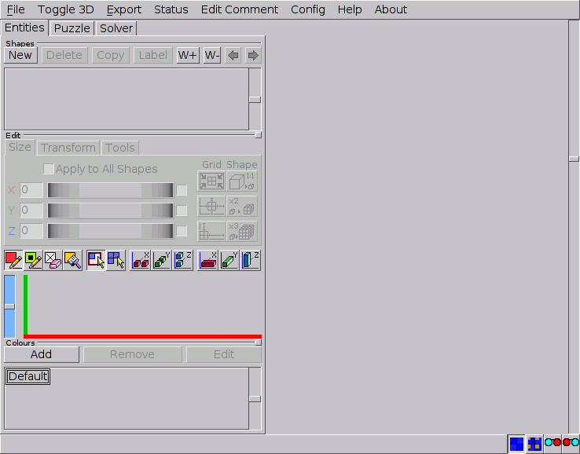
The BurrTools Menus
Below is a brief overview of the main menu entries with references to the places in the text where a more detailed explanation is provided.
- File
- This menu holds the procedures for handling files within BURRTOOLS and for exiting the program (→File Menu).
- Toggle 3-D
- Swaps the 2-D and the 3-D grids for the Entities tab (→Navigating in 2-D and 3-D).
- Export
- Contains a sub-menu with 3 entries. One allows you to export the contents of the 3-D viewer that can be used to create high quality solution sheets (→Exporting Images). The next allows you to create STL files for 3-D printers (→Exporting to STL). The final entry exports the current content of the 3D-view to a vector image (→Exporting vector images)
- Status
- This opens up a window containing lots of possibly useful information about the shapes of the puzzles (→Chapter Status).
- Edit Comment
- Allows appending textual information to the puzzle file (→Adding Comments).
- Settings
- This menu item opens the preferences dialogue (→ Settings Dialogue). On macOS it lives in the application menu, as do About and Check for Updates.
- About
- Shows a window with some information about the program.
- Check for Updates
- Asks GitHub whether a newer BurrTools release exists and, if so, shows its release notes with a button that opens the download page. A version can be skipped. The same check can run automatically at startup (→[Settings Dialogue ChConfigMenu]).
The File Menu
The File menu has all the traditional entries for handling files. Many of these are well known from other software and don’t need much explanation. Some of the items also have keyboard shortcuts as indicated in the menus. Prior to executing most of these commands a warning (and option to cancel) is given whenever changes to the current design haven’t been saved yet.
- New
- Starts a new design after removing all the information of the current one. The first thing that happens when you start a new puzzle is that you will be asked which spacegrid to use. When BURRTOOLS is started it defaults to using the cubes spacegrid, so if you want to use another grid you need to use this menu.
- Load
- Opens a BURRTOOLS
*.xmpuzzlefile. A notification will pop up when a partially solved design is loaded. Short cut:[F3]. - Import
- This entry opens a traditional file dialogue that allows importing
PUZZLESOLVER3D files (
*.puz) into BURRTOOLS. Although these imported designs often can be subjected to the solver right away, some postediting may be required because of the differences in the way BURRTOOLS handles holes in the result and duplicated pieces. BURRTOOLS will import all the pieces from the*.puzfile and assign them to the shapes S1 to Sn-1. Accordingly, the result from the PUZZLESOLVER3D file will be assigned to the last shape (Sn). Also a problem definition is automatically created (→Chapter Puzzles and Importing).
Since all imported shapes consist only of fixed voxels, the result shape may need some editing (puzzles that have internal holes or pieces not filling the outskirts of the result shape) to make the solver run. Also, duplicated pieces should preferably be deleted from the Shapes list (→Creating Shapes).
- Save
- Saves your work into a
*.xmpuzzlefile. If the design had not been saved before (indicated with ‘Unknown’ in the BURRTOOLS windows title bar) the Save As command will be activated. Short cut:[F2]. - Save As
- Allows you to save any changes to a new file, thus keeping the original design the way it was.
- Convert
- Allows you to convert the current puzzle from its current gridtype into another grid type (→Chapter Converting Shapes
- Import Assms
- With this menu entry you can import a set of existing assembly solutions of one problem as new shapes into your puzzle (→Chapter Importing Assemblies as Shapes)
- Quit
- Shuts down BURRTOOLS.
Except when the solver is actually running, saving your work is always possible. This means that after stopping (pausing) the solver it is possible to save the results found thus far. Later on these partially solved puzzles can be loaded again and the solving process may be resumed. This allows you to subject ‘huge’ problems (e.g. “Coming of Age” from Brian Young) to BURRTOOLS and have them solved in several sessions overnight or whenever you don’t need your computer for other tasks.
The Settings Dialogue
The Settings item on the menu bar opens a new window (Figure settings dialogue) to set some options for the program. Every option is explained right in the dialogue, and Restore Defaults brings them all back to their factory values. These settings are stored in a configuration file in your home directory and the program uses them each time it is started.
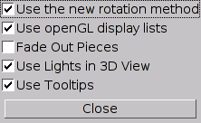
- Use Tooltips
- By default BURRTOOLS shows tooltips for most of its controls, but to the more experienced user these soon become very annoying. This option allows you to switch these tooltips off.
- Use Lights in 3D View
- This option toggles the use of a spotlight in the 3-D viewer. When disabled, the items in the 3-D viewport get a uniform (high) illumination, whereas enabling this option provides a more rendered appearance of the objects by adding a spotlight in the upper right corner of the 3-D viewport and shading the faces of the objects. However, on some systems this may result in a relatively dark left bottom corner that can hamper a clear view of the objects.
- Fade Out Pieces
- This option affects the way pieces that become separated from the rest are depicted. Hence, the effects are visible only after running the solver (→Visibility of Pieces).
- Use openGL display lists
- This option enables an optimisation for the 3-D viewer which makes it faster when drawing complex shapes. Sadly it seems to be that some OpenGL implementations don’t properly support that option. So when you experience crashes when you edit shapes or rotate something in the 3-D view, try disabling this option. It is off by default.
- Use new rotation method
- This option allows you to toggle between the old way the shapes are rotated and a new way. With the old method a shape always returned to the same orientation when the mouse was dragged back to the starting position. The new method allows rotating a shape by drawing circles on the screen.
- Reverse scroll zoom direction
- Reverses the direction the 3-D view zooms when you turn the mouse wheel.
- Show View Cube
- Displays the View Cube navigation widget in a corner of the 3-D view. Click a face, edge or corner of the cube to snap the view to it with a smooth animated rotation; the Home button resets pan and zoom. Turn this off if you find it in the way.
- Undo History Depth
- How many editing steps the undo/redo history keeps: 25, 50, 100 or 200.
Higher values use more memory for large puzzles. Nearly every edit to shapes,
colours and problems can be undone with
[Ctrl+Z]and redone with[Ctrl+Shift+Z]([Cmd+Z]/[Cmd+Shift+Z]on macOS); undoing also takes you back to the tab where the change was made. - Worker Threads
- How many CPU cores the solver may use for assembling and disassembling. Both stages share this pool. The default is 60% of your machine’s cores, so a long solve still leaves room for other work; lower it if your computer should stay fully responsive, raise it to the full core count for maximum speed.
- Check for updates at startup
- At most once a day, BURRTOOLS quietly asks GitHub whether a newer release exists and, if so, shows its release notes with a button to the download page. A version can be skipped, and Check for Updates in the menu performs the same check on demand, whether this option is on or off.
The Status Bar
The status bar has two parts. On the left is given information about the task at hand, and on the right are two groups of buttons to alter the 3-D view. The first group selects how the 3-D view shows the shapes. You have the choice between the normal view where each piece is drawn with its default colour, or a view where each piece is drawn with its colour constraint colour (if it has one assigned →Adding Colour). The last two options are for a mode called anaglyph (see figure Window Anaglyph). In this mode the pieces are drawn using the red-cyan method to display real 3-D. You can view these with red-green, red-blue, or red-cyan glasses. The icon shows you which way around the colours must be in front of your eyes.
The second group selects the render style: each voxel drawn separately (the classic look), flat faces with lines only at the real piece edges, or the chamfered mesh that the STL export writes, so the preview shows exactly what a printed piece will look like (→Exporting to STL). The choice is remembered between sessions.
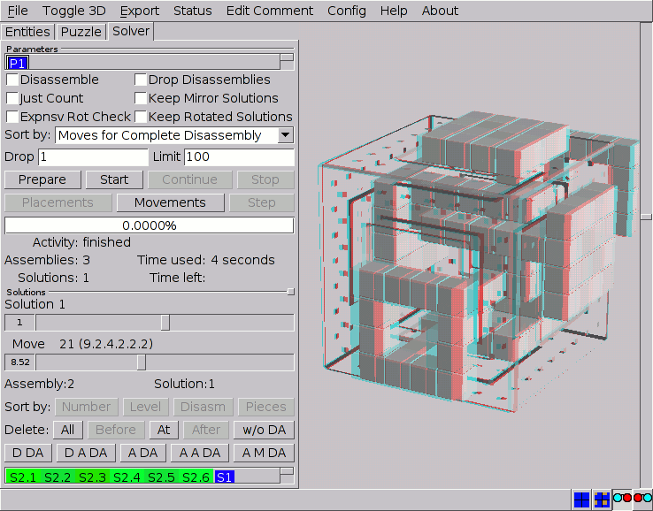
The Tools Section
In between the menu bar and the status line is the most important part of BURRTOOLS: The section that allows you to submit existing puzzles to the solver, but more even important lets you create and test your own designs.
The Puzzle People
The tools section has three major tabs that might can be thought of by analogy with real people in the world of mechanical puzzles. First there is the Entities tab, which can be seen as the craftsman who creates different shapes but is not concerned with their purpose of these (→Chapter Shapes). As long as his saw blade is sharp he’s the happiest man in the whole wide world. Next, we have the Puzzle tab. This is the weirdo who thinks it’s fun to come up with completely insane problems to be solved with the otherwise very innocent objects produced by our craftsman (→Chapter Puzzles). However, his contribution to the preservation of our planet is considerable… by saving a lot of wood scraps from the incinerator. And last we have the Solver, the poor guy who spends not only a great deal of his money on these finely crafted puzzles but almost all of his leisure time on solving them (→Chapter Solver), only to feel very euphoric when he finally succeeds. But scientists are still breaking their heads over the question whether this is caused by the sweet smell of success, or is merely due to severe sleep deprivation.
Resizing the Elements
Although the layout of the GUI is designed to suit the needs of most users, it sometimes may be useful to resize some elements for convenience in using BURRTOOLS. Besides the traditional resizing of the main window, BURRTOOLS has a couple of features to alter the relative importance of its controls.
First, the tools tabs can be made wider or narrower (thus making the 3-D viewport more or less important) by dragging the right edge of the tools section. Hovering your mouse pointer over that edge will make it change into a left-right arrow, indicating that you can start dragging it.
Second, within each of the three main tabs some sections (panels) can be resized as well. For example, if you have a design with many different shapes but no colour constraints at all, reducing the size of all colour related controls and maximising those concerning shapes could be very advantageous. The panels on the tool tabs are separated by so called resize handles (Figure Resize). The separators that allow resizing are easily recognised by a little beveled square on their right end. Hover your mouse pointer over the lines until it changes into an up-down arrow, indicating that you can drag the separator up or down to resize the panel.
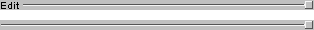
Note that each section has a minimum size. It is not possible to make it smaller than that minimum size.
The 3-D Viewer
Normally the biggest part of the GUI is reserved for the 3-D viewport. In fact this 3-D viewer is threefold and has different properties for each of the tabs of the tools section. For the Entities tab the 3-D viewport shows the currently selected shape and reflects all editing operations performed on that shape. Also the x-, y- and z-axes are shown to assist navigating in space. With the Puzzle tab activated an overview of the current problem is presented: the result shape (double sized) on top and a single instance of each shape used as pieces below it. Finally, for the Solver tab, the 3-D viewer can be used to browse all assemblies found and/or show an animation of the moves involved in the disassembly of the puzzle.
Any object in the 3-D view can be rotated by simply dragging it, and the scrollbar on the right allows zooming in or out on that object by respectively moving the slider down or up or by using your mouse-wheel. Note that the zoom settings are independent for each of the three tools tabs. For precise orientation, click a face, edge or corner of the View Cube in the corner of the view to snap to it with an animated rotation, or press its Home button to reset pan and zoom (→Settings Dialogue).
Extra options for the 3-D viewer are available in the Settings dialogue (→Settings Dialogue).
Undo and Redo
Nearly every edit can be undone: voxel painting, shape transforms, colour
changes, adding, removing or renaming shapes and colours, and problem setup.
A continuous stroke, such as painting or deleting many voxels with one mouse
press, or a burst of rotations, counts as a single undo step, and undoing
takes you back to the tab where the change was made. Use [Ctrl+Z] to undo
and [Ctrl+Shift+Z] to redo ([Cmd+Z] / [Cmd+Shift+Z] on macOS), or
the corresponding menu entries. How many steps are remembered is set with
Undo History Depth in the settings dialogue (→[Settings Dialogue
ChConfigMenu]); the default of 25 is plenty for most designs.
Shapes
Spacegrids
Currently BURRTOOLS handles cubic grids, grids that use prisms with a base shape that is an equilateral triangle tightly packed spheres and 2 grids based on different tetrahedrons: the rhombic and the tetra-octa grid. The spacegrid is used for all shapes within a puzzle, so you cannot have one shape made out of cubes together with one using another grid. The spacegrid needs to be set before you start with the puzzle. It cannot be changed later on In some situations though it is possible to losslessly convert the complete puzzle (→Converting Puzzles). The gridtype is selected when you use the New option.
The following chapters will explain some details regarding some of the available grids.
Sphere Grid Limitations
Actually there is just one important thing to know about the sphere grid: It has a relatively severe limitation. This limitation makes it impossible to properly handle shapes with disconnected units.
I don’t want to go into too much detail here but the limitation comes from the fact that BURRTOOLS can only handle a finite number of symmetries.
Internally BURRTOOLS has a list of all possible transformation matrices that might transform a shape back onto itself, e.g the shape looks identical to the original untransformed shape. This list of transformations needs to be finite (and as small as possible, because longer lists make the program slower).
Unfortunately the sphere grid has an infinite number of transformations that might transform the shape onto itself. To display the problem let’s assume we use the sphere grid in just 2 dimensions and use a square arrangement of spheres. We place one sphere at the origin and add 2 more spheres so that both of those additional spheres have the same distance from the sphere in the origin. If we now place one of the 2 spheres at coordinate (a;a) and the other at (a;-a) then both of them will have the same distance from the sphere in the origin.
The 3 spheres form a triangle with a right angle at the origin. This triangle has a symmetry axis which is a horizontal line from the origin. That means a rotation of 180 degrees around the axis y=0 will result in an identical looking triangle with the outer spheres swapped. This is one of the transformations mentioned above that BURRTOOLS has to check. (See Sphere Grid Problem left image)
If we now move the 2 outer spheres by one unit each. One to the right and the other down. Which results in those spheres at positions (a+1;a-1) and (a-1;-a-1). We again get a rectangular triangle of a slightly different size. This triangle again has a symmetry axis but this axis is slightly rotated clock wise. This would be a different transformation BURRTOOLS has to handle. (See Sphere Grid Problem right image)
You can imagine that there is an infinite number of possibilities to place the spheres, resulting in an infinite number of possible rotation axis and thus an infinite number of transformation matrices.
BURRTOOLS can only handle a finite number of possibilities. I have limited those to the possibilities that you can encounter when you use only completely connected shapes. This problem only occurs because the sphere itself has an infinite number of possible rotation axes.
Connected in this context means that that it is possible to get from each sphere to each other sphere by just jumping from one sphere to the 12 possible neighbours and then further on via the neighbours.
Some of the unconnected shapes might be possible as well but there is no warrant, so if you want to be sure stay with “proper” sphere shapes.
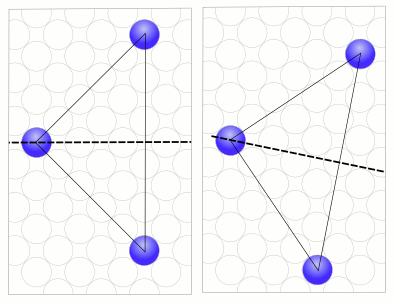
The rhombic grid
This grid allows the modelling puzzles that have diagonally cut cubes, but more importantly it allows modelling a lot of rhombic dodecahedral based puzzles like Stewart Coffin designs.
The rhombic grid is much more intricate compared to basic grids like the cube grid. So please read this part of the manual thoroughly to avoid problems.
Much of the text below only talks about the rhombic based puzzles and indeed puzzles that just have diagonally cut cubes don’t suffer the complexity but I still suggest to read on because it might shed some light on some of the not so obvious things that the program does.
Structure of the rhombic grid
The basic unit of the rhombic grid is a tetrahedron that results when cutting the cube along the 6 45 degree diagonal planes. The result are 24 identical but irregular tetrahedra. To see what I mean have a look at the image below. It contains 2 different versions of the cut up cube. One where the tetrahedron assemble the complete cube and another exploded version of the same cube. To make distinction of the tetrahedra easier I have colourized the tetrahedra layer by layer, always 4 with the same colour. Additionally I made the voxels variable in the first cube so that is is easier to see what shapes they have.
Those variable voxels are a nice trick to see the inner structure of shapes, when the bevel edges are not enough.
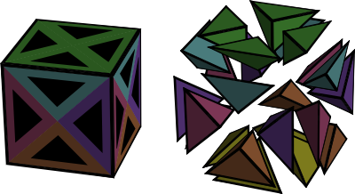
The next important thing to know is how are these 24 tetrahedra managed. The picture below shows how it is done.
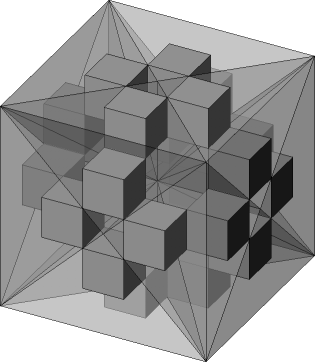
It can be seen that the 25 voxels of the rhombic grid are mapped onto a 5x5x5 cube of little cubes. Each tetrahedron is represented by exactly one cube.
Between those 24 cubes are 125-24 = 101 empty cubes that don’t belong anywhere. It you ever do something manually and modify the grid directly you must take care to always leave those cubes empty or BURRTOOLS will crash. But as long as you only use the program it will take care that that doesn’t happen.
Now given those basic units how to we build a rhombic dodecahedron from it?
The basic building blocks
The basic building blocks are basic units that Stewart Coffin used in his puzzle books to describe the shape of the pieces for his puzzles. This was necessary because of the limited information that can be given using 2 dimensional drawings. But those blocks are still useful to gain an understanding in the mechanics of the rhombic grid.
So let’s start with the Rhombic Dodecahedron (RD). From that shape we can derive all other building blocks.
The rhombic dodecahedron is best built starting with a cube of size 2x2x2. That cube can be easily made my creating a 1x1x1 cube (24 voxels) and scaling is up by 2. Now “cut” away the outer corners of the cube so that all that is left is a diamond shaped square rod. Repeat the same process for the other axes. (More details in the RD-Tutorial)
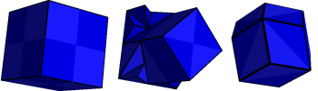
Don’t create the dodecahedron by adding 4 pyramids to the 6 sides of the 1x1x1 sized cube. Why that doesn’t work is explained below.
If you rotate the rhombic dodecahedron so that you can see only a square can be seen and then remove 3 quarters of the square so that you get a square with halve of the length you will get a six-sided centre block. 6 Pieces of this block will nearly always be the centre of the puzzle. Other blocks will be “glued” to the faces of those 6 six-sided centre blocks.
Cutting up the block further will result in the other blocks like the 2 prism blocks, square octahedron, square pyramid, tetrahedral building block.
The shape dualism
Have a look at the image blow. You can see 2 connected identical shapes. They are 2 diagonal star pieces. On the right image the voxels are also made variable to make the inner structure of the shapes visible. What can be seen is that both shapes do have the same outer appearance but a completely different inner structure.
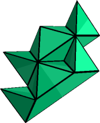
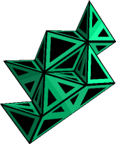
This can only result in problems and it sure does. All building blocks down to the tetrahedral building block can be made in 2 different ways. BURRTOOLS will not be able to match those 2 ways to build a shape. If you make a problem with 2 shapes that are made those 2 different ways and choose one to be the piece and one to be the result you will get no solutions.
This all sounds like a severe problem but luckily it can be solved in a very simple way by scaling all shapes up by 2. The program will then make sure that all shapes are build the same way.
So keep in mind: When something doesn’t work as expected or to make a final check of the results scale up by two and check again.
The Tetrahedral-Octahedral Grid
This grid is, just like the rhombic grid, a grid purely made out of tetrahedrons. But here we have 2 different kind of of them. One regular and 4 irregular forming together a cube. The 4 irregular tetrahedrons can be assembled into an octahedron. They have one side with an equilateral triangle and 3 sides that are a diagonally cut square. You can see one of those cubes in an exploded view in image Exploded Tetrahedral Octahedral view. In that image you can see the regular tetrahedron red in the middle and the other blue surrounding it.
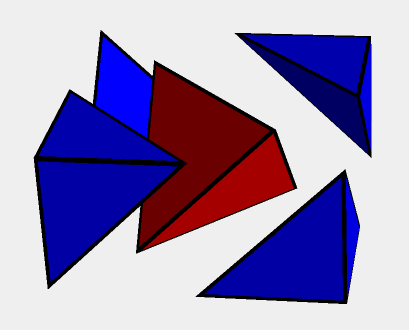
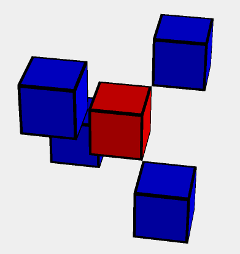
There are 2 ways to align the cube assembly of the regular and the 4 irregular tetrahedrons in space. One is a rotation of the other. These 2 possible cubes fill the space of this grid in a checkerboard pattern.
Internally this grid is, again just like the rhombic grid, represented by the cube grid. Each cube in the tetra-octa grid uses a 3x3x3 cube in the cube grid. The central regular tetrahedron occupies the central cube while the 4 irregular cubes are placed in the diagonally opposite corners of the cube (see Figure Tetra-Octa Grid). In the image the red cube represents the regular tetrahedron while the blue cubes represent the other parts.
And just like the rhombic grid this grid also has a problem that might require upscaling in certain situations, so keep that in mind.
Creating Shapes
The key concept of BURRTOOLS is shapes. A shape is simply a definition of an object in 3-D space and consists of a collection of voxels (space units). These voxels in turn may have their own characteristics such as state and colour. Note that this definition also includes shapes made out of voxels that are attached to each other by only a single edge, just a corner, or even are completely separated in space. The solver certainly won’t bother… but how these shapes could be crafted in the workshop is beyond the scope of the program.
All functions and tools for creating and editing shapes — once the grid type is set — are located on the Entities tab which has — from top to bottom — three main sections (Figure EntitiesTab):
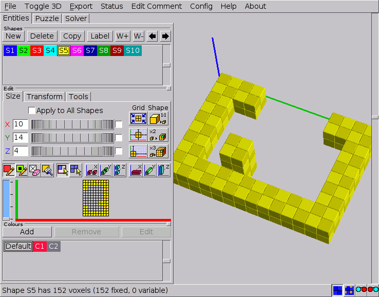
- The Shapes panel
- This section is mainly a list of the available shapes and has the tools for creating and managing the shapes. Shapes to be edited can be selected in this list (→CreatingShapes).
- The Edit panel
- This section provides the tools to build or edit the currently selected shape. This panel contains a series of subtabs with several tools for adjusting the Size of the shapes, Transform them in 3-D space, and some extra editing Tools. Below these subtabs there’s a toolbar with the devices for actually constructing the shapes in the 2-D grid at the bottom of the panel (→BuildingShapes).
- The Colours panel
- This panel contains — besides a list of the available colours — the tools to create and edit custom colours which can be assigned to the voxels of the shapes. These colours can be merely ornamental or can have a serious impact on the way the solver will work by imposing restrictions on the possible placements of the pieces (→Adding Colour).
Creating Shapes
The very first step is to draw the shapes that can be used in your puzzle design. All the tools to do so are just below the Shapes caption (Figure EntitiesTab). Clicking the New button starts a completely new shape with an empty grid, while Copy allows you to edit a previously entered shape without destroying the first. Obsolete and redundant shapes can be discarded with the Delete button.
All shapes are identified with an ‘Sx’ prefix. This prefix serves as a unique identifier for the shape throughout the GUI and cannot be removed or altered, but Label allows you to add a more meaningful name. Note that on the status line the shapes will be referred to only by their prefixes.
By clicking an identifier in the list, the shape becomes selected and ready to be edited. Also a short description of that shape appears on the status line. The currently selected shape is indicated with a white border around its identifier in the shapes list.
The buttons with the arrows pointing left and right allow you to change the position of the shape in the list. The first one moves the selected shape toward the front of the list, whereas the other button moves the shape toward the end of the list. Note that rearranging shapes will cause their prefix to change but not the additional name.
Unlike the pieces in PUZZLESOLVER3D, shapes don’t need to be part of the puzzle. This means that you can build a file that contains a vast number of shapes, e.g. all 59 notchable six-piece burr pieces, of which you assign only 6 to the pieces of your puzzle design.
Finally, the shapes have an additional parameter: the weight. This value is used when constructing the disassembly animations. When the disassembler has found 2 groups of pieces that can be moved against each other it needs to decide which group to actually move and which to keep where it is. This decision can be influenced by the weight. The program searches the maximum weight in both groups and the one group that has the bigger maximum weight will be kept in place and the other group will be moved. If both groups have the same maximum weight the group with the smaller number of pieces will be used.
Have a look at the chapter about optimizing the disassembly animation.
Grid Functions
Since shapes are defined as objects in 3-D space, and theoretically 3-D space is unlimited in size, it’s convenient somehow to be able to define a more feasible subspace to work with. This, and some more advanced scalings of the shapes, can be accomplished with the functions on the Size subtab (Figure SizeSubtab) of the Edit panel.
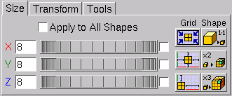
Note that the tab might look slightly different for different gridtypes. For example the sphere grid doesn’t have the shape buttons as those are useless with that grid.
Adjusting the Grid Size
When the very first shape is initialised it has a default grid size. This default size is different for each grid. For example it is 6x6x6 for cubes. But if there is already a shape all other new shapes will inherit the grid size of the currently selected shape. This feature can be very useful in creating a series of shapes that are restricted with respect to certain dimensions (e.g. all pentacubes that fit in a 3x3x3 grid). Selecting the proper shape before creating a new one often can save a considerable amount of time by avoiding grid adjustments.
Adjusting the grid size to your needs can be done either by entering values in
the input boxes next to the axis labels, or by dragging the spin wheels. When
you enter values, the grid will be updated as soon as you select one of the
other input boxes (either by a mouse click or by the [Tab] key), or when
you press the [Return] key. Note that the grid is also updated by simply
clicking in or next to the 2-D grid. To avoid unexpected results it’s
recommended always to confirm the entered values with the [Return] key.
Increasing any grid dimension is completely harmless, but decreasing them needs
some caution since it can destroy parts of the shape.
The checkboxes for linking adjustments — to the right of the spin wheels — allow you to adjust two or all dimensions simultaneously. All linked dimensions will increase or decrease by the same absolute amount. However, none of the dimensions can be made smaller than 1 unit. Linked dimensioning is very useful in creating bigger and complex shapes such as the result shape of NO NUKES! (Ronald Kint-Bruynseels), which is easily done by first creating the central burr in a 6x6x6 grid and adding the extensions after resizing the grid to 14x14x14 and centring the ‘core’ in that enlarged grid.
Advanced Grid and Scaling Functions
BURRTOOLS has some powerful time-saving functions to manipulate the position of the shape in its grid or to rescale a shape together with the grid. These features are grouped below the captions Grid and Shape on the right side of the Size subtab. The first set of three will affect only the grid and/or the position of the shape in the grid, the other procedures however will have an impact on the shape itself by scaling it up or down.
Below is an overview of these functions, explaining precisely what they do and with an indication of the reason they were introduced into BURRTOOLS. No doubt you’ll soon find other situations in which these tools can prove to be valuable.
Grid tools. Most of these tools are somewhat extended versions of the more general transformation tools (→TransformationTool) and have the advantage that they can act on all shapes at once (→AdjustAllShapes).
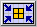
:- Minimise the grid - This function will minimise the grid to fit the dimensions of the shape it contains. Use it to reduce the disk space occupied by your puzzle files. Note that the result of this function is strictly based on the contents of the grid and will have no effect whatsoever on empty grids.
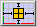
:- Centre the shape in the grid - This function centres the shape in the surrounding grid thus allowing you to edit all sides of the shape. In some cases this will also increase one or more dimensions of the grid by a single unit to provide true centring. The function is most useful in editing symmetrical shapes in combination with the compound drawing methods (→CompoundDrawing).
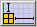
:- Align the shape to the origin - This function brings the shape as close as possible to the origin of the grid. It can very useful if you want to make a descending series of rectangular blocks by copying the shape and manually adjusting the grid dimensions.
Shape tools. Use the following functions wisely because unnecessary and extreme scaling up of the shapes will put a heavy load on your system resources and can increase solving time dramatically. Also, trying to undo such ‘ridiculous’ upscalings with the 1:1 tool can take a long time. So, think twice, click once…
These tools make sense only for spacegrids where a group of voxels can be grouped to make an upscaled shape that looks like a voxel of the grid, e.g. a group of 2x2x2 cubes looks like a bigger cube. As this doesn’t work with spheres, these tools are not available there.
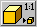
:- Minimise the size of the shape (1:1 tool) - This function tries to make the shape as small as possible without any loss of information and at the same time scales down the grid by the same factor. Use this function to check the design for oversized shapes which would slow down the solver. Note that although this function can undo the effects of both of the next scaling functions, the result cannot be guaranteed since the algorithm may scale down beyond the initial size.
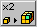
:- Double the scale - This function will double the scale of the shape (and its grid). In other words, it will replace every voxel in the shape with a group of voxels that all have the same characteristics (state and colour) as the original voxel. This can be very useful to introduce half-unit notches or colouring into the design without having to redraw the shape(s).
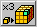
:- Triple the scale - This function is similar to doubling the scale, only now a scaling factor of 3 is used and hence every voxel in the shape will be replaced by 27 identical voxels. This can be very useful if you want to introduce ‘pins and holes’ into your design.
Adjusting All Shapes
A last, but certainly not least, item to mention is the Apply to All Shapes checkbox. When checked, all shapes — whether they are selected or not — will be affected by the settings and procedures on the Size subtab. This is very useful and time saving when a certain adaptation needs to be done to all the shapes, e.g. transforming a six-piece burr with length 6 into one with length 8.
However, some precautions are built in to prevent accidental destruction of shapes. Manually reducing any grid dimension will still be performed only on the currently selected shape, whereas increasing (which is completely harmless to the shapes) will affect all grids. On the other hand, minimising the grids will be applied to all shapes since it is content related. The 1:1 tool won’t affect any shape unless all shapes can be scaled down by the same factor. This prevents ending up with an unintended mixture of differently scaled shapes.
Building and Editing Shapes
Once a shape has been initialised, the 2-D grid in which it can be built becomes accessible on the Edit panel. Basically one needs only three tools to create any shape, but some more features are added to make life easy. All these are on the toolbar right above the 2-D grid (Figure FigureToolbarGrid). The first four buttons are the basic drawing tools and colouring tool. These are all toggle buttons, meaning that enabling one will disable the others. They affect the presence and/or the state and colour of the voxels drawn by clicking in or dragging over the cells in the 2-D grid.
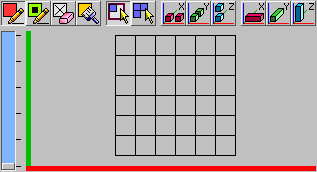
Next come two toggle buttons that allow you to select the drawing style. This is the way the basic drawing tools will respond to dragging the mouse over the grid cells. Finally, a series of compound drawing tools follows. These extend the range of the basic drawing tools and can all be cumulatively added to them.
Keep in mind that the grid looks differently for each space-grid. And for some spacegrids this 2-D grid is meant mainly for information as editing sphere shapes with the 2-D grid can be troublesome and with the rhombic grid is close impossible to properly edit a shape with the 2-D grid. That is why all shapes can be directly edited within the 3-D viewer. But nevertheless, the 2-D grid has its merits.
Navigating in 2-D and 3-D
Building and editing can take place exclusively in the 2-D grid, and then the
3-D viewport acts only as a visual aid. Both have their corresponding axes in
the same colour: red for the x-axis, green for the y-axis and blue
for the z-axis. For the 2-D grid, which actually can show only a single layer
at a time, the z-axis is represented with a scrollbar (Figure
FigureToolbarGrid). By default every new shape starts on the
bottom layer and the scrollbar allows you to move up and down through the
different layers along the z-axis (the number of z-layers is always indicated
with the proper number of ticks along the scrollbar). Another way to navigate
these z-layers is by pressing [+] (moves up one layer) or [-] (moves
down one layer) on the keyboard.
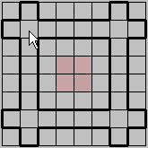
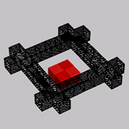
Moving the mouse cursor over the 2-D grid gives an indication of the cell(s) — depending on the state of the compound drawing tools — that will be affected by clicking. These indications are also reflected in the 3-D viewer. Furthermore, to facilitate positioning on different layers every non-empty voxel on the 2-D layer just below the current one ‘shines through’ in a very light shade of the default colour associated with that shape (Figure FigureNavigation). This makes building shapes from bottom to top very easy.
With larger grid sizes the cells of the 2-D grid can become very small, even
when the available area for the grid on the Entities tab is maximised. To
overcome this inconvenience the 2-D grid and the 3-D viewport can be exchanged.
To do so, click the Toggle 3D item on the menu bar or press [F4].
Note that this affects only the position of the 3-D viewport for the
Entities tab.
Basic Drawing Tools
The basic drawing tools affect the presence and/or the state of a particular voxel in the shape. In fact, together with the brush tool (→Brush Tool) they are all that’s needed to create any shape in BURRTOOLS. The following is a description of these tools. Note that each is also accessible through a keyboard short cut.
- :
- Fixed pen - Use this tool to draw normal or fixed voxels. Fixed
voxels are represented by completely filled cells in both the 2-D and the 3-D
grid (→Representation). Remember that these fixed voxels
must be filled in the final result. Keyboard short cut:
[F5]. - :
- Variable pen - This tool allows you to draw variable voxels. In the 2-D
grid these variable voxels do not completely fill the cells, but have a narrow
border showing the background of the grid. In the 3-D viewport the variable
voxels have a black inset (→Representation). Variable
voxels instruct the solver that these particular places may be either
filled or empty in the final result. So variable voxels are allowed only in
result shapes, and the solver will give a warning whenever it encounters any
variable voxels in a shape used as a piece. Short cut:
[F6]. - :
- Eraser - The eraser will remove voxels from the shape. Note that clicking
or dragging with the right mouse button has the same effect of erasing voxels.
The eraser tool however proves its use in minute adaptations of shapes. Short
cut:
[F7].
Drawing Styles
BURRTOOLS has two different drawing styles. These styles affect the way voxels are drawn/erased or colours are added by dragging with the mouse. In drawing shapes by simply clicking ‘cell-by-cell’ both are equivalent.
- :
- Rectangular dragging style (‘rubber band’) - On dragging over the 2-D grid with the mouse, a rectangular selection of cells will be made. This is shown with a heavy border around the selected cells and the voxels will only be altered on releasing the mouse button. But releasing the mouse button outside the actual grid will make the whole operation void and can serve as a sort of ‘undo’. This style is useful not only for drawing rectangular shapes or parts, but also for adding colour to (large areas of) the shape.
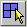
:- Free dragging style - All drawing and colouring operations will be performed on a single cell basis and as soon as the mouse cursor is dragged over that particular cell. This drawing style is very useful for creating complex and irregular shapes and colour patterns.
The status of these drawing styles is remembered by BURRTOOLS so that it always defaults to the drawing style that was active on the last shut down of the program.
Compound Drawing Tools
Although the basic drawing tools are all that is needed for creating shapes, some compound drawing tools are added to speed up the process. The compound drawing tools can be added cumulatively to the basic drawing tools and only extend the range of action for the latter ones.
Note that these tools always function along the 3 orthogonal axes, so they are very useful for cubes but might need a bit of getting used to for the other spaces as they might behave differently along the 3 axes. The triangular prisms for example are stacked along the z-axis, side by side along the x-axis and tip by tip along the y-axis.
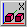
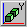
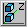
:- Symmetrical drawing methods - For every voxel drawn, erased, or coloured its symmetrically placed counterpart (with respect to the centre of the grid and along one of the space axes) will be affected as well. Activating only one of these options will double the number of edited cells, whereas activating two or all three will affect respectively four times and eight times as many cells simultaneously. These options are not only useful for drawing symmetrical shapes, but they are also very well suited for finding the centre of the grid and (temporarily) setting the extents of a shape.
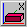
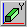
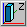
:- Column drawing methods - These options — possibly combined with the symmetrical drawing tools — can really speed up drawing shapes as they will affect all voxels that are in the same row or column along one of the space axes. The number of voxels that will be affected depends on the size settings of the grid. Hence, to take fully advantage of these functions the grid should be first adjusted to the proper dimensions.
Using the 3D-Viewer to Edit
As editing non rectangular shape with the 2-D grid is cumbersome, it is also possible to do some editing using the 3-D view directly by simply clicking onto faces to add the corresponding neighbour voxel. This will always only add or remove single voxels and will not honor the compound drawing settings. The following actions are possible:
- Add a normal voxel by pressing
[Shift]and clicking onto a face. The neighbour is added. - Add a variable voxel by pressing
[Alt]and clicking onto a face. Again the neighbour is added. - Remove a voxel by pressing
[Ctrl]and clicking onto a voxel. This removes the voxel.
As spheres do not really have touching faces the 3-D view of them does contain circles with a slightly different colour around the places where the spheres would tough. Clicking on those circles on the sphere adds the corresponding neighbour sphere.
To avoid having to click all that often you can wiggle the mouse around to get a repeated action. So if you want to “drill” a hole into a shape place your mouse there, click and drag over the hole and the voxels will be gone much faster than with repeated clicking.
Adding Colour
There are basically two reasons for using colours in your puzzle designs. The first is merely aesthetic: colours are used only to explore the looks of the puzzle. This can help you selecting the proper species of woods or stains before taking your design to the workshop. The second however is far more important, as it uses colours to force or prevent certain positions of particular pieces in the assembly. These constraining techniques can be very useful to pursue a unique solution for a puzzle design. Of course one can try to achieve both the aesthetic and constraining goals at the same time. Figure FigureCustomColours shows an example of DRACULA’S DENTAL DISASTER (Ronald Kint-Bruynseels) in which colours serve both. The red and black voxels are meant to impose constraints on the placements of the pieces, whereas the white colour of the parts on the inside of the pieces is used only to make them look nice.
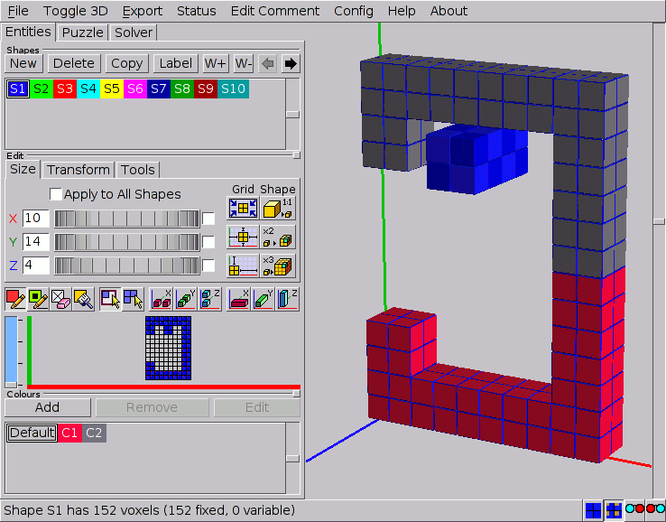
The Default Colour and Custom Colours
Even when no ‘special’ colours at all are used, the program assigns each shape its own different nominal colour. This is the so-called default colour and is there only to distinguish the shapes from one another. These default colours are standard for each newly created shape (the first one in the shapes list is always blue, the second one green, the third one red, etc…) and cannot be altered.
As far as the solver is concerned, the default colour doesn’t even exist, as all appearances of it are fully interchangeable. So any voxel in the pieces that has only the default colour can go into any voxel of the result shape, and every voxel in the result that has no other colour than the default can accommodate any voxel of the pieces, independent of its colour.
Independent from their default colour, voxels can have customised colours as extra attributes. To avoid confusion, it’s recommended to make these colours well distinguishable from the default colours in use, since a custom colour that is identical to one of the default colours will have a completely different effect on the way the solver behaves. Almost without exception custom colours need some constraint settings (→ColourConstraints) to make the solver run.
Creating and Editing Custom Colours
The tools for creating and editing colours are located on the Colours panel of the Entities tab. This panel also has a list in which the colours can be selected to be used in the design or to be edited. The New button allows you to create a custom colour. A dialogue will pop up and present you the necessary tools to create the colour you need. Accordingly the Edit button allows you to transform an already existing colour using a similar dialogue. This dialogue also shows the currently selected colour for comparison (unless the default colour is selected, which makes the dialogue to show the default medium grey). Note that the default colour can be neither removed nor changed. It’s important to realise that the BURRTOOLS engine discriminates custom colours only by number as indicated in their prefix ‘Cx’ and not by the actual colours themselves. Hence it is possible to create identical colours that nevertheless will be treated as different. So, it’s strongly advised to introduce only colours whose difference can easily be discerned. Otherwise, finding out why a puzzle has no solutions can be very hard. The Remove button will not only discard the colour from the list, but will also remove it from any voxel that has it as an attribute by replacing it with the default colour.
When you add a colour, BURRTOOLS automatically adds a constraint rule that pieces of this colour can be placed into result voxels of this colour. This is done by default because it is the way colours are most often used. If you don’t want this constraint you have to explicitly remove the rules (→ColourConstraints). Also, when a new problem is created BURRTOOLS automatically adds one such rule for each existing colour.
Applying Colours
Colours can be applied while drawing the shape. Just select a colour and it will become an extra attribute of the fixed pen or the variable pen. Additional colouring can be done by using the Brush tool.
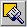
:- Brush tool - This is a ‘colouring only’ device and merely adds the
selected colour to the voxels without altering their state. The brush tool can
also be activated by pressing
[F8]on the keyboard.
The behaviour of this brush tool is similar to that of the drawing pens. So it obeys the drag styles and can be extended with the compound drawing tools. Note that the right mouse button will still completely erase the voxel.
Representations
Voxels can be either fixed or variable, and each of these can come with or without an additional custom colour. In BURRTOOLS all of these cases have their own specific representations in the 2-D grid as well as in the 3-D viewport. Figure Representation shows an overview of these possibilities. In this picture the default colour is red (= shape S3) and the custom colour is yellow (RGB = 1, 1, 0).
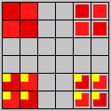
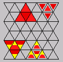
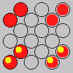
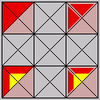
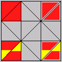
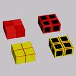
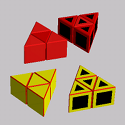
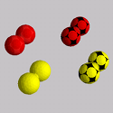
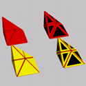
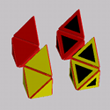
Fixed voxels always fill the cell completely in the 2-D grid as well as in the 3-D grid. In all the pictures of Figure Representation the voxels on the left are fixed voxels. Variable voxels only partially fill the cell in 2-D and have a black inset in 3-D (the voxels on the right in Figure Representation). For spheres the insed is simply a part of the surface.
Voxels that have a custom colour added (the yellow voxels in Figure Representation) show this colour as an inset in the 2-D grid, whereas in the 3-D viewer they are completely painted with this colour (provided that the Colour 3D View on the status line is checked, otherwise they will be painted in the default colour). Note that in both grids the default colours also have a slightly checkered pattern which can assist navigating in space (except for the spheres, which have no checkering).
Transformation Tools
Editing complex shapes can be very cumbersome and often requires a lot of navigating through the 2-D grid. So, properly positioning and/or orientating the shape in the 2-D grid can save a lot of time. BURRTOOLS comes with a set of functions that help you adjust the position and orientation of the shapes. These functions are grouped on the Transform subtab of the Edit panel (Figure TransformationTools). The first thing to see is that the transform tab looks quite different for all 3 available gridtypes. At the top of the figure you see the tab for cubes, below for triangles, and at the bottom for spheres.
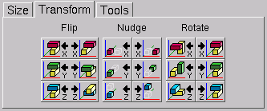
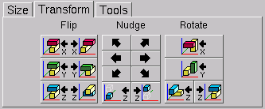
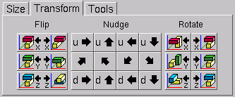
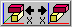
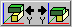
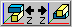
:- Flip - These ‘three’ functions are merely one single mirroring tool, the only difference is the orientation of the mirrored shape they provide. The first will mirror the shape along the x-axis (or in a plane through the centre of the grid and parallel to the YZ-plane). The others perform the same task, but along the y-axis (XZ-plane) or the z-axis (XY-plane) respectively. Note that each button can undo its own action as well as the actions of the other buttons, since the result of each function can be obtained by simply rotating the outcome of any other. However, there are three buttons to provide some control over the orientation of the mirrored shape in the grid space, which can save time if the shape needs further editing.
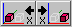
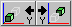
and more:- Nudge -These functions provide translations (along the x-axis, y-axis or z-axis for the cubes, or along different axes for other gridtypes) of the shapes in their surrounding grids. These buttons have two parts, of which the left part will shift the shape towards the origin of the grid and the right part will move it away from the origin. Note that shifting a shape beyond the boundaries of the grid will (partially) destroy it. So these nudging operations can also be used to erase unwanted parts on the outer limits of the shapes.
- :
- Rotate - These functions allow you to rotate the shapes around an axis parallel to the x-axis, y-axis or the z-axis. Again, these buttons have two parts, of which the left rotates the shape 90° anti-clockwise (viewed towards the origin) and the right button turns the shape 90° clockwise. To avoid destroying shapes by rotating them, the grid may be rotated as well.
The triangle space has only one rotation button for the x and y-axis because it is possible to rotate only by 180° around these axes.
Miscellaneous Editing Tools
The Tools subtab (Figure Tools) offers extra editing tools. Currently only some constraint related tools are available.
Constraining Tools
These tools are mass editing tools that have an impact on the possible placements of the pieces in the final result. They act either on the inside or the outside of the shape. Voxels that are considered to be on the inside are voxels that have another voxel adjacent to all of their faces. Consequently, outside voxels have at least one empty voxel neighbouring.
- :
- Fixed Inside/Outside - These functions allow you to change the state of the voxels that are either on the inside (left button) or on the outside (right button) of the shape into fixed voxels. Although one can think of situations in which these can be useful as such, they are mostly used to undo the effects of the next two functions.
- :
- Variable Inside/Outside - These functions will respectively make all the voxels on the inside or the outside of the shape variable. Making the inside variable is very useful for puzzles with internal holes in undetermined places. On the other hand making the outside variable can be helpful in a lot of design situations (e.g. adding extensions to the pieces). Clicking both buttons will make the shape completely built out of variable voxels. Use these wisely as the more variable voxels there are, the slower the solver will run.
- :
- Colour Remover - These buttons will remove any custom colours from the voxels that are either on the inside or the outside of the shape, and replace them with the default colour. Removing the colour from the inside can prevent having to apply complex colouring to the result shape in situations were the colour constraints are relevant only to the overall appearance of the puzzle.
Depending on the grid the tab might contain more buttons with more actions. Right now the following additional tools are available
- Fill Holes
- This button will fill all internal, which means completely surrounded, voxels of the selected shape. This is useful for more complex grids, where is is not easy to see in the grid view whether a voxel is on the inside or not.
Converting Shapes
For some grid types it is possible to convert the shapes of a puzzle from one grid type to another. That means the base grid type of the puzzle is exchanged, the solutions are deleted and the shapes are replaced.
Currently the following conversions are implemented:
- cube grid to rhombic grid
- cube grid to tetra-octa grid
To do one of those conversations choose File - Convert. A Window will pop up showing you to what other grids you can convert the current puzzle. If no grids are available a message will display this information.
You then choose your intended target grid and confirm. That’s it. Useful is this if you need big shapes in the rhombic grid that would be a lot of work to assemble manually in those grids. On the other hand: this tool requires a bit of planning ahead because you first need to create the prototype shapes out of cubes then convert and then perform the final modifications.
Importing Assemblies as Shapes
With this tool it is possible to create shapes out of a set of assemblies of one problem of your puzzle.
When you choose this option a window will pop up, which looks a bit like the window in Figure Assembly Import. A few of the options are not available in all grids and might be missing in your actual window.
The Window contain the source problem in the top. All assemblies of this problem are taken and converted into shapes.
Below you can select, if you want those new shapes added to a new problem, to an existing problem, or to no problem at all.
If you want to add the new shapes to an existing problem you can choose to which one
If you add the shapes to a new or existing problem you can define the range that the pieces get in the problem.
Finally you can filter the shapes using several filters. All the conditions of the selected filter must be fulfilled at the same time. The filter conditions are connected with a logical and.
The following filter conditions are available:
- Drop disconnected shapes
- Shapes where you have 2 or more voxelgroups that are not face-connected with one another fill be dropped
- Drop shapes with mirror symmetry
- Shapes that have a mirror symmetry, that means shapes that can be flipped over and still look identical are dropped
- Drop all shapes with a symmetry
- Only completely non symmetric pieces are kept
- Drop non millable shapes
- Only pieces that contain no inside corners are kept. This option is only available on the cube grid
- Drop non notchable shapes
- Only shapes that can be made with a saw are kept. This option is only available on the cube grid
- Drop identical shapes
- Only import shapes that are different from one another. It might be that the same shape can be build in different ways with the building blocks you defined. If you don’t want those identical looking shapes check this box.
- Range
- You can choose a range out of how many voxels the shape must consist. If the new shape contains more or less voxels it will be dropped and not get added to the puzzle
See chapter piece generation for a usage example of this feature.
Managing Shapes and Colours
Currently the shapes can only be rearranged with the left and right arrow buttons of the Shapes section.
Shape Information
When using the main menu entry Status a window (Figure WindowStatus) like the one above opens and displays all kinds of information about all the shapes available inside the puzzle. The table columns have the following meanings:
- Units Normal
- Contains the number of voxels inside the shape that have the state fixed.
- Units Variable
- Contains the number of voxel inside the shape that have the state variable.
- Units Total
- Contains the number of voxels inside the shape that are either fixed or variable.
- Identical
- If the shape is identical to another shape with smaller number, the first such number is displayed; so if shape 3, 4, and 5 are identical, shape 4 and 5 will point to shape 3 but shape 3 will show no indication.
- Identical Mirror
- A previous shape is cited, if the shapes can somehow be transformed into the other including the mirror transformation.
- Identical Shape
- A previous shape is cited, if the shapes are identical without mirroring.
- Identical Complete
- In this case shapes must be completely identical including colours and not only the appearance of the shape.
- Connectivity
- This part of the table shows if the shape is completely connected, i.e. doesn’t contain any separate voxels.
- Connectivity Face
- This part is marked with an X when all parts of the shape are connected via the faces of the voxels. A face is a surface of a voxel. Cubes have 6 such faces, the triangular voxels have 5, and spheres have 12 faces.
- Connectivity Edge
- This part is marked with an X when all parts of the shape are connected via an edge or a face of the voxel. An edge is the connection between 2 corners of a voxel. A cube has 12 edges and the triangular voxel have 9. Spheres have no edges.
- Connectivity Corner
- This part is marked with an X when all parts of the shape are connected via a corner, an edge, or a face. A corner is the end of an edge. Cubes have 8 corners, the triangular voxel have 6 corners, and spheres have none.
- Holes
- This part of the table contains information about possible holes inside the shapes.
- Holes 2D
- A 2D hole is a hole in a 2-dimensional shape. So the o-octomino has a 2D hole.
- Holes 3D
- A 3D hole is a completely surrounded region inside a shape.
- Sym
- This is a column that is mainly there for my help. BURRTOOLS needs to know about all kinds of symmetries a shape can have. If a shape turns up that has a kind of symmetry yet unknown to the program it cannot solve puzzles with this shape. So here is a tool to check beforehand and without the need to create a problem. If you ever see a coloured mark in the last column send me the shapes where it turns up. As long as this last column contains only numbers without a coloured mark everything is fine.
Because calculating all this information can take a considerable amount of time, BURRTOOLS pops up a window when it is working on accumulating this table. The window contains a progress bar to guess how much longer it will take. There is also a Cancel button at the bottom that lets you abort this calculation and view the results already gathered.
Tips and Tricks
Below are some tips and tricks that can be useful to simplify your designs, speed up the designing and/or solving process, or can be used as workarounds for some limitations of BURRTOOLS. We encourage the reader to share his own tips and tricks with us so that we can incorporate them in a future update of this document.
Voxel State and Size Tips
- State and Solver Speed
- The greater the proportion of variable voxels in the result shape, the slower the solver will run. Also, the number of pieces has an impact on the solving time. Hence, replacing variable voxels with empty spaces for known holes in the puzzle is to be considered. Also, leaving out a piece in complex packing puzzles (and making its position empty in the result) can reduce the solving time considerably.
- Size and Solver Speed
- The size of the shapes has an effect on the solving speed, since bigger shapes inevitably lead to more possibilities: for a 1x1x1 cube there’s only one possible placement in a 2x2x2 grid (excluding symmetries), but for a 2x2x2 cube there are four of them in a 4x4x4 grid. So trying to minimise all shapes with the 1:1 tool before taking the puzzle to the solver is highly recommended for complex designs.
- Complete sets
- Often complete sets of pieces (e.g. the hexacubes in HAUBRICH’S CUBE) can be easily made by repeatedly copying the current shape and editing it with the properties of left and right clicking.
- Symmetry
- A detailed treatment of some symmetry issues will be added to the next update of this document.
Colouring Tips
- Colouring Shapes
- Colouring shapes as a whole is easily done with the brush tool in combination with the rectangle dragging style and z-columns switched on.
- Aesthetic Colours
- When colours are used solely for aesthetic reasons, make sure that the result shape has only the default colour. This will prevent having to set a lot of constraint conditions.
- One-Sided Polyominoes
- Polyominoes can be made one-sided by having them two layers thick and adding different constraint colours to the two layers. The constraint settings (→ColourConstraints) should simply be a ‘one-to-one’ relationship.
- Hiding Pieces
- For puzzles in which the goal is to hide a certain piece on the inside of the assembly (e.g. Trevor Wood’s WOODWORM), two constraint colours should be used in the result shape: one for the exterior and one for the voxels on the inside and one for those on the outside. Also colour the piece that must be hidden with the ‘inside’ colour, and apply the ‘outside’ colour to all other pieces. The constraint settings (→ColourConstraints) must then be such that the piece to be hidden is allowed to go only into the ‘inside’ colour, while the other pieces may go into either colour.
- Marks On Shapes
- Colours can also be helpful to give orientation on pieces. When trying to add additional voxels to a given shape add them with a new constraint colour. This way you will easily find it again. Once everything is done remove the colour from the colour list and the marks will be gone as well.
Also having marks on the pieces will ease orientation between the transformed piece in the solution and the original piece in the piece editor.
Finally marks will help other people understanding how pieces are made. If you generate pieces by merging 2 shapes you could colourize one shape so that other people quickly see the construction rule (see the Broken Sticks puzzle in the examples).
Piece Generation
Sometimes you want to use a complete mathematical set of pieces for designing a puzzle or for analysing one. Creating such a complete set is and tedious and error prone process.
BURRTOOLS provides tools that may in many cases do a lot of the work you need. The tools themselves are explained in their appropriate places here we will just do an example so that you can see how they do fit together.
To make things easier an example file is provided:
DemoPieceGenerator.xmpuzzle if you load this file you will find some of the
below actions prepared for you.
For this example we set us the following task:
Find all notchable 6-piece-burr pieces.
To do that let’s start by adding the minimal shape for a 6-piece-burr piece and a single cube.
Now we also need a shape that defines what expanse the final shape can have. This is a simple 2x2x6 block in our case. Within this block mark all cubes of the minimal bur-shape as filled and the rest as variable.
Now define a problem. Add the basic 6-piece-burr shape. We also need to add single cubes. As we want all shapes starting from 0 cubes added up to the complete block we need to have 0-10 of those single cubes, so set the range for the single cube to 0-10.
Now we have all that we need. All this is prepared in the provided file.
Go ahead and solve this problem. Here you should tag the Expensive rot. check check-box (→ Rotation considerations) and also the Keep Mirror Solutions check-box. Set the limit high enough to keep all solutions (there will be 1024 solutions).
Now solve, you will get 1024 solutions. To import those solutions into a problem (→Assembly import). Use File - Import Assms. In the dialogue that pops up select the problem P1 as source for the import and as destination for the new shapes choose to add them to a new problem. Also tag the Filter disconnected pieces and the Drop non notchable check-box. We end up with a new problem P2 with 52 pieces.
That’s it you can now work with this set of pieces and find your own favourite 6-piece burr.
A few remarks to this explanation:
- The result shape of the problem defines the maximum possible expanse of the final shapes you generate, so if you wan all pentominoes that fit into an 3x3x3 cube just define a 3x3x3 cube as result shape
- This method is not really suitable for really huge numbers of shapes (e.g. creating all octominoes) because you first need to generate all possible arrangements of cubes, which is much much more than the already big number of octominos. Here a filter is required that already filters assemblies, but that is a future project.
- The Keep Mirror Solution tag is required as otherwise you’d end up with only one shape out of mirror pairs.
- The default settings for the assembly import filter is normally good, except if you need special constraints
- Be careful, as the import can’t be undone and removing a huge pile of shapes can be a tedious job, so better save before doing an import
Simulating non-cubic spacegrids
It is possible to emulate spacegrids different from cubes by just using cubes. This way BURRTOOLS can solve different kind of puzzles. This section will give hints on how to such things. It will not contain obvious emulation possibilities like hexagons with 6 triangles or x by y rectangles using several squares, but rather some of the more complicated possibilities. The chapter cannot be complete but rather it wants to suggest what can be done and give you some initial ideas. If you come up with a cool idea you are welcome to send it to me and I will include it here.
Generally this emulation requires using N cubes for one basic unit. This will probably result in a slowdown of the solving process, but the slowdown is not always that grave. BURRTOOLS knows how to merge voxels that are always occupied by the same piece into one, so if there is for example a puzzle that uses hexagonal pieces made out of the triangular prisms and these hexagons are always aligned on a hexagonal grid, BURRTOOLS will merge the 6 triangles together and work with the resulting shapes. This takes some time only at the initialisation phase. On the other hand, there might be many placements of pieces that fit the underlying cube to triangle grid that are not proper placements and that need to be sorted out first. This can take a long time. MAJOR CHAOS by Kevin Holmes for example has a lot of illegal placements for pieces that need to be sorted out. That takes a very long time, but once that is done the solving is actually very fast.
Two-Sided Pieces
If you have pieces that have a top and a bottom, there are several possibilities to model that in BURRTOOLS. One possibility is to use colours. Make the piece and the result 2 layers thick. The bottom layer of both will get a special colour.
Another possibility is to add an additional layer that has voxels only in certain places as seen in the picture. The additional voxel prevents the rotation of the shape. But you have to make sure that the allowed rotations are still possible, e.g. if you place the notches in different places rotation around the z-axis is also no longer possible. An example can be seen in Figure Emul2Sided
Diagonally Cut Cubes and Squares
Cubes can be cut in many different ways, to approximate shapes such as given in Figure EmulDiagCut use the 2x2x2 cube displayed there.
It is, of course, also possible to simulate diagonally cut squares this way. The squares need to be 2 layers thick.
BURRTOOLS can also handle half cubes with the Rhombic Grid. But that is more expensive because you need 24 units for a whole cubes while this emulation only needs 8 units for one cube.
Cairos
Cairos are pentagons but luckily they have only 4 rotations, so it is possible to emulate them using squares. Figure EmulCairos demonstrates how that can be done.
Squares with Cuts of Slope 0.5
TBD
Edge Matching
Sometimes it is possible to emulate edge matching problems by using notches and dents at the outside of the shapes.
As example let us have a look at a puzzle designed by Marcel Gillen: “Octopuz”. This puzzle has pieces that are made out of 2 quatrominos. Those 2 quatrominos are connected to each other with a link and they can be turned so that in the end each piece has 4 possible shapes depending on how you rotate one halve against the other.
These shapes can be modelled using edge matching simply taking the shapes apart into their 2 halves, and colourize the touching surfaces of she 2 shapes of one piece with the same colour and a different colour for each shape.
To model such a colour edge matching problem we need to scale up by at least 3. With this scaling we are able to add dents and grooves to the basic cube so that always 2 and only those 2 cubes match independent of the rotation of one cube relative to the other. Figure Edge matching shows 5 possible such pairs of cubes. The 2 cubes in one column always are a matching pair.
Other possibilities
There are many other shapes that can be emulated. As one example I will show 2 ways to emulate William Waites KNIT PAGODA (see Figure Pagoda1). Besides their shape the pieces have a top side and a bottom. Figure Pagoda2 shows 2 possible ways to emulate these pieces. Both shapes emulate the T-shaped piece seen on the bottom right.
It is quite easy to see how the pink shape works. It is constructed starting with a 3x3x1 square, and for each side adding a cube at the centre at the centre to represent each side that bulged outward, and removing one cube for each side that bulges inward. Finally add a cube atop the centre of the 3x3 square to make it unflippable.
The second is quite a bit more complicated to understand. Here the starting point is a 2x2 square. A cube is added or removed for the bulges just as in the other case but those cubes cannot be in the middle. They are at one side so that the cube from an outer bulge can go into a gap created by an inner bulge. The resulting shape for one unit contains 4 cubes along a zig-zag line. You can see it by looking for the lighter cubes in the cyan shape above. This way has the additional advantage of avoiding flips because when the piece is flipped over the orientation of the bulges changes and the cubes do not mesh.
Defining Puzzles
Typically a puzzle problem in BURRTOOLS consists of a collection of pieces (shapes) and a goal, say another shape that the pieces should form when correctly assembled. This is what we call a simple problem definition. Note that it may well be not that ‘simple’ to solve it in real life. More elaborated or complex puzzle problems contain also colour constraints and/or grouped pieces.
As stated before, a puzzle can be a collection of problems, either simple, complex or a mixture of both. The Puzzle tab (Figure PuzzleTab) provides all the tools needed to build a variety of puzzle problems that are suited for the Solver.
Defining Simple Problems
As defined above, a simple puzzle problem consists only of a collection of pieces and a result shape that can be assembled (and preferably also disassembled) with these pieces (Figure SimplePuzzleProblem). Bear in mind that a simple problem also implies that all the pieces can be separated from one another. It takes only two steps (which are also required for complex problems) to create such a problem: initialising the problem and assigning shapes to the pieces and the result.
Initialising Problems
The first step is to initialise the problem(s). All the tools to do so are just below the Problems caption. Just as with shapes, this can be done by clicking the New button to start a completely new one, or by using Copy to edit a previously created problem definition without destroying the original. Accordingly, problems can be removed with the Delete button. All problems find their place in the problems list below these buttons and are identified with a ‘Px’ prefix to which a more meaningful description can be added by clicking the Label button. Also the methods for selecting and rearranging problems are similar to their counterparts on the Entities tab and need no further explanation here.
Piece Assignment
Until now we dealt with shapes as rather abstract concepts. Only by assigning these shapes to the pieces or the goal of a puzzle do they become meaningful. All available shapes are presented in the top list of the Piece Assignment panel, in which they can be selected and be given their purpose in the puzzle. Since a strict distinction is made between shapes and pieces, it’s not necessary that all shapes be used in a single problem or in any problem at all.
Although not mandatory, it’s probably best to assign the result shape first: select the appropriate shape and click Set Result. The result shape is then depicted in the top left part of the 3-D viewport (which also shows a smaller example of the currently selected shape) and the status line shows some information about the problem at hand.
Next, any other shape can be assigned to the pieces of the puzzle by selecting it and clicking +1. This adds a single copy of the shape to the second list which holds all the shapes used as pieces. If multipieces are involved, just add as many instances of the shape as required by the same means.
In the list of pieces any multipiece has an instance counter added (in parentheses) to its identifier. A single instance of every shape used in the puzzle is shown in the lower part of the 3-D viewer. To make corrections, pieces can be removed from the puzzle by selecting them (they also can be selected by clicking them in the pieces list) and clicking -1. Again, this removes only a single instance and needs to be repeated for removing multipieces.
Most of the time it is necessary to add one instance of all defined shapes to the puzzle. If there are a lot of them this can take while. This is what the all +1 button is for. It increases the piece counter for each shape (except the one assigned for the result) by one. Or it adds a first instance of the shape to the problem. The Clr button removes all pieces from the problem.
Since it doesn’t make sense for any shape to be both the result and a piece at the same time, the shape set as result cannot be added to the list of pieces. Consequently, assigning a shape that’s already in the list of pieces to the result will remove it from the list.
Whenever the total number of cubes in the pieces is within the boundaries set by the result shape (which can be inspected on the status line), this kind of simple puzzle problems can be taken to the solver. Note that the solver won’t run if one or more pieces contain any variable voxels.
Piece Ranges
BURRTOOLS is capable of handling piece ranges instead of a fixed number of pieces. This feature is useful when you want to search for puzzles instead of solving a given one. If there is a range defined for one or more pieces then BURRTOOLS finds all ways to assemble the defined result using a number of pieces within the given range. As an example let’s take Ronald Kint-Bruynseels Clarissa-Burr (see http://www.asahi-net.or.jp/~rh5k-isn/Puzzle/ClarissaBurr). This puzzle consists of 2 different shapes. When Ronald defined this puzzle he had to try all possible combinations of the 2 pieces, beginning with 6 pieces of shape A and zero of shape B, over 5 times A and one B up to 6 times B. This can now be done way more easily with piece ranges. Simply tell BURRTOOLS that the result should be made out of 0-6 pieces of shape A and 0-6 pieces of shape B, or if you want to ensure that at least one of each shape is used, use ranges 1-6. Then solve.
Piece ranges can be easily defined using the min=0 button. This will set the minimum of the piece range for the current shape to zero. With that you can define the range by first adding max-min pieces (meaning the difference between the maximum and the minimum number of pieces), then set the minimum to zero and then add the missing minimum pieces. This should cover the most used usage cases.
For example: suppose you want to add a piece that you want to use 3, 4, 5 or 6 times in your puzzle. The piece range is 3-6. To enter those values you first add 6-3=3 pieces. Then you press the min=0 button getting a piece range 0-3. Now you add another 3 pieces and you get the range you want.
Except for the min=0 button, all other buttons always change the minimum and the maximum of the piece range.
If this calculation is too hard for you, you can use the problem detail dialogue (see section ProblemDeatils) to enter the ranges directly without the need for calculations.
Grouping Pieces
Something we deliberately haven’t mentioned in the description above is the fact that the solver will halt whenever it is unable to separate some pieces from each other. In other words, the solver will attempt to separate all the pieces from each other and reports that no solution exists when it fails to do so. This is just what is required for most puzzles as you need to have single pieces as a starting point.
But there are a few puzzles for which you have groups of pieces that are movable but not separable. Here the piece groups come in handy. Probably some of you know how frustrating is is to not be able to analyse a puzzle just because there are 2 pieces that are supposed to not go apart. Not so with BURRTOOLS, as piece groups allow you to tell the disassembler that it is OK when it cannot separate a few pieces from one another.
Another usage of this function is if you have 2 pieces that require a rotation to come apart. BURRTOOLS will not be able to separate them, so you tell it that those pieces may stay together.
Concept
When the disassembler finds two or more pieces that cannot be taken apart it checks whether all of the pieces involved are in the same group. If that’s the case it rests assured and continues. If the pieces are not in the same group, the disassembler aborts its work and reports that the assembly cannot be disassembled. This is the basic idea, but there is a bit more to it.
Complete Disassembly
A special case is ‘Group-0’. All pieces in this group need to be separated from each other. This group is included so that it is not necessary to place all the pieces into their own group when you want the puzzle to completely disassemble. Pieces automatically go into Group-0, so you don’t need to take care of that. As a matter of fact you won’t even find any reference to that Group-0 in the GUI.
Basic Piece Grouping
On the other hand, when dealing with puzzles of which it is known that certain pieces (say Sa and Sb) can’t be separated from each other, grouping these pieces will cause the solver to report a valid disassembly in which the grouped pieces are treated as a single piece. But it is not a rigid piece since the parts can freely (within certain boundaries) move with respect to each other.
{Sa, Sb}
Group-1 → Sa+Sb
This technique can also be used for pieces that may be entangled, in case one is searching for possible designs. If these pieces are indeed inseparable the solver will report so, but if they can be separated the solver may report the complete disassembly as well:
{Sa, Sb} ?
Group-1 → Sa+Sb
Result: {Sa, Sb} and/or Sa, Sb
Now for the hard part: pieces can be in more than one group. If you have e.g. a puzzle for which you know that piece Sa either interlocks with piece Sb or piece Sc and cannot be separated from it, but you don’t know which of those (Sb or Sc) piece Sa is attached to, you can assign Group-1 to Sa+Sb and Group-2 to Sa+Sc:
{Sa, Sb} or {Sa, Sc}
Group-1 → Sa+Sb
Group-2 → Sa+Sc
This way the disassembler detects that both pieces are in Group-1 when Sa and Sb are inseparable and it finds that both pieces are in Group-2 when Sa and Sc cannot let go from each other. In both cases the solver will report a valid disassembly. However, if Sb and Sc are entangled the solver is not able to find a valid disassembly.
Grouping Multipieces
All instances of a multipiece need to have the same group assignment, but you can specify how many of these may be in a group maximally. That means you can make statements like ‘not more than 3 pieces of Sn may be in Group-1’:
Sa_1, Sa_2, … Sa_n
Group-1 → Sa_1+Sa_2+Sa_3
Now how does it all come together? The disassembler starts to do its work. For each subproblem (a subproblem is a few pieces that it somehow has to get apart) it first checks if there is a unique group assignment for all pieces involved — i.e. all pieces have exactly one group assigned and that group is the same for all of them — it doesn’t even attempt to disassemble that subproblem.
If this is not the case it tries to disassemble. In case of a failure it adds the pieces that are in this subproblem to a table of lists of pieces. Once done with the disassembler, the program comes back to this table and tries to assign a group to each of the lists of pieces. It just checks all possibilities by comparing the entries of the table with the group assignments made by the user. Whenever the sum of pieces (of a certain shape Sx) in such a ‘problematic’ table entry is bigger than the value the user designated to that particular piece, no valid group assignment can be made. If the program can find a valid assignment the puzzle is disassembled; if it cannot, the puzzle is assumed to be not disassemblable.
Example
Assume we have a puzzle that contains (among others) 5 pieces of shape Sa. Three of them might go into Group-1 and another 2 into Group-2. There is also a piece Sb that might go into Group-1:
Group-1 → Sa_1+Sa_2+Sa_3+Sb
Group-2 → Sa_1+Sa_2
After the disassembler has run we have the following lists of pieces in the table:
- Sa, Sa
- Sa, Sa, Sb
Now the program has to assign Group-2 to the first set of pieces and Group-1 to the second set of pieces. Because otherwise piece Sb would be in the wrong group, it can only be in Group-1. If there would be another piece Sa in the first set it would not be possible to assign groups because we can only have two pieces Sa in Group-2. But it would be possible to have another piece Sa in the second set.
We have no idea how useful this might be in practice as most of the currently available puzzles require a complete disassembly. But who knows, maybe this feature will help in the design of lots of puzzles new and crazy ideas.
Editing Problem Details
All settings that cannot be set directly on the main problem tab can be set within the Problem Details window (Figure GroupEditor) which opens by clicking the Detail button. This window allows you to define groups and to define piece ranges without having to subtract values. The window also contains rarely-used parameters.
Let’s first see how piece groups are defined using this window. Although the above section may sound complicated, implementing piece groups is actually very simple. All actions take place in the Problem Details Editor. Initially the Group Editor shows a tabulated overview of the pieces used in the problem. The first column (Shape) lists the pieces by their prefix and name, the second and third (min and max) show the instances range of each.
Creating piece groups is straightforward as the Add Group button simply adds a new group to the problem. Each new group gets its own column (Gr 1, Gr 2, etc…) in which one can specify the maximum number of instances of a certain piece that can go in that particular group. Just click on a cell and it will become an input box. Cells that contain a value > 0 will receive the default colour of the corresponding shape, cells with zero are grey and no number is shown. Any group that has no values at all in its column will be deleted on closing the Group Editor. Hence, deleting all the values of a previously made group will remove the group even if its column stays present in the Group Editor.
Now to the piece ranges. It is possible to enter the values directly into the min and max columns of the table. You just have to keep in mind, that min has to be less than or equal to max. This is enforced by the program, so that max will change, if you enter a value in min that is larger than the current maximum. The same holds true for the minimum, when changing the value in the max column. You also need to keep in mind that the table contains entries only for shapes that are already used in the current problem. You cannot (yet) add another shape to the problem using this dialogue, but you can remove a shape by setting the minimum and the maximum to zero.
Finally, this window also contains an entry field called Maximum Number of Holes (empty variable cubes). This value is used by the program, when piece ranges are used, in which case it is not possible for the program to determine how many holes there will be in the final solution. Because this missing information results in a huge slowdown as many more possibilities have to be tried, it is possible to use this field to specify the maximum number of holes allowed. If the number of holes should not be limited, the field should be left empty.
Setting Colour Constraints
BURRTOOLS automatically adds the most probable rules for colour constraint when you add a new colour or when a new problem is created, namely that each colour can be mapped into itself, i.e. a piece voxel with colour Cx can go into a result voxel of colour Cx. If you don’t want that or if you need additional placement possibilities, you can change the colour constraint rules in the colour assignment section.
The Colour Assignment panel (Figure ColourAssignment) has two lists. The first one shows all the available custom colours and allows selecting a certain colour for which then some relations can be set. These relations simply indicate which colour(s) in the result can accommodate which colour(s) in the pieces. By allowing certain combinations (which is in fact prohibiting all other combinations), constraints are imposed on the possible placements of the pieces. These relationships are shown and constructed in the second list. This list has three columns, of which the first shows the ‘piece colours’, the last shows the ‘result colours’, and the one in between clearly depicts the relationships by a series of arrows pointing from the piece colours to the result colours. The list is sorted either by the piece colours or by the result colours. The buttons Sort by Piece and Sort by Result switch between these two views.
When sorted by piece (the left part of Figure [ColourAssignment FigureColourAssignment]), the bottom list is showing you that every voxel of the pieces with colour Cx can go into every voxel of the result that has one of the colours at the end points of the arrows starting from Cx. When sorted by result (on the right in Figure [ColourAssignment FigureColourAssignment]), the list shows which piece colours will be allowed to go in a particular colour of the result.
To set these relationships, first click the piece colour (or result colour, depending on the sorting method) for which you want to set the constraints. This will activate the ‘relations line’ for that particular colour which is indicated with a dark surrounding box (note that clicking anywhere on this relations line has the same effect). Next, the down and up pointing arrows will respectively add or remove the colour selected in the top list to or from the constraint settings.
Managing Problems
Currently puzzle problems can be rearranged only with the left and right arrow buttons of the Problems section, but more advanced management procedures may be added in the future.
Tips and Tricks
- Maximum Number of Holes
- Keep this value as small as possible, because the more holes a puzzle contains the longer the solving will take. Normally the value is undefined, meaning the number of holes is not limited. So if you know the number of holes you want, or you want to limit them, or the solving takes too long, use this field.
Some tricks and tips will be added to the next update of the user guide.
Grouping Tips
TBD
Constraint Tips
The “At Least 2 Colours” Rule
There is one error that happens quite often to people (including me) when working with colour constraints. I want to force certain pieces or parts of pieces in certain positions. To do that I colourize the pieces and the target positions.
When I solve I observe, that the pieces are still placed all over the place. The problem is the neutral colour. It can accommodate all possible other colours. So:
**You need at least 2 colours for a placement constraint**
For a real placement constraint you need to use at least 2 colours. One colour on its own can be only usable for marks on the pieces, or to colourize the pieces for a nicer display.
Solving Puzzles
Solving puzzles is what BURRTOOLS is really about. Without its solving engine the program would be nothing more than a simple tool for drawing a very specific kind of 3-D objects… a task a lot of other software is no doubt even better suited for.
Solving puzzles is very straightforward with BURRTOOLS even if the Solver tab (Figure Solver) has quite a few controls. On top there is the Parameters panel that contains a list allowing you to select a specific problem to be solved, provides option settings for the solver, and has a series of buttons to direct the solving process. Finally, some information on the ongoing solving process is presented.
A second panel (Solutions) has the tools to browse the different solutions found, animate the moves to disassemble the puzzle to inspect the solutions in detail, and to organize the solutions that have been found.
Solver Settings
In order to make the solver run, a problem must be selected first. A list of all previously defined problems is available right below the Parameters caption. Selecting problems to be solved is similar to selecting shapes, colours, or problems on the other tabs. Note that only the selected problem will be solved, and that solving one problem will preserve the results of any already solved or partially solved problem. Currently there are the following options for the solver. All deal with the kind of information the solver will report.
- Disassemble
- When checked, the solver will try to disassemble any assemblies found, and only those that indeed can be disassembled will be added to the list of solutions. If this option is left unchecked, the solver will merely search for all theoretically possible assemblies, i.e. assemblies for which the pieces do not overlap. Since solving disassemblies takes time (and often far more than assembling), it’s recommended to leave this option unchecked for puzzles that always can be disassembled (e.g. PENTOMINO problems and other packing problems). For that kind of puzzles, running the disassembler would only slow down the process without any gain in information.
- Just Count
- When checked, the solver will only count the number of solutions; it will drop the solutions right after they are found. Check this option if you’re interested only in the number of solutions and not in the solutions themselves.
- Drop Disassemblies
- When checked, the program functions the same as with Disassemble enabled, except that the disassembly is not stored, only the assemblies and some information about the disassemblies (like their level). This is useful if you have a problem that has many solutions and you want to find the most interesting solutions. Disassemblies take up a lot of memory within the computer so it is useful to just save some information while solving the puzzle and then later on, when everything is finished, recalculate the disassemblies for the interesting solutions.
- Keep Mirror Solutions
- When this box is checked, the program will not remove mirror solutions. Two solutions are mirror solutions are solutions when one solution is a real mirror of the other. This can happen only, when either all pieces are self mirroring (note that all flat pieces are self mirroring) or they have a mirror pair in the piece set. Sometimes it is possible to create the mirror solution by flipping the solution over. These are not mirror solutions to BURRTOOLS and are still removed. This option is useful when using piece ranges, as the mirror removal would remove too many solutions, like solutions with different piece sets.
- Keep Rotated Solutions
- When this box is checked, the program will not exclude solutions that are only rotations of other solutions. So the final solution count will be wrong. It will even be completely unpredictable somewhere in the range of the right number of solutions and a 120 fold of that value (for spheres). This option is useful if you just want to know if there are any solutions at all.
- Expnsv Rot Check
- When this box is checked, BURRTOOLS will do a more thorough but also more CPU time consuming check for double solutions. The basic idea behind it is explained in the chapter about Rotation Removal. A use of this switch is explained in the piece generation example
- Sort by
- This option lets you choose the order in which the solutions are presented while the solver runs. There are 3 possibilities:
- unsorted: The solutions are sorted in the order in which they were found.
- by level: The solutions are sorted by the level. First by the number of moves to remove the first piece, if that is identical then by the moves for the second piece, and so on.
- by number of moves to disassemble: The solutions are sorted by the sum of all moves required to completely disassemble the puzzle.
- Drop
- If a puzzle has very many solutions, it might not be necessary or even possible to save all of them. E.g for polyomino-like puzzles it might be nice to keep just every 1000th of the millions of solutions, so as to have a profile of the possible solutions. Here you can specify every how many-th solution you want to keep. A 1 means you keep every solution, a 100 means you keep the first and the 101st and the 201st and so on.
- Limit
- Limits the number of solutions to be saved. There will never be more than the specified number of solutions in the list. When the list is full the program has 2 choices:
- Solutions are sorted: The programs throws away the solutions at the end. So low level solutions are removed.
- Solutions are unsorted: The program starts to throw away every 2nd solution. So if you started with a drop-value of one and the list is full, the program starts to drop every 2nd solution it finds, and only adds every 2nd solution to the list. But for each added solution it also removes every 2nd solution that was already added to the list. After a while the list contains only every 2nd solution — then the program only adds every 4th solution and removes again every 2nd solution that had been on the list, and so on. This sounds complicated but what is does is ensure you have an nice cross-section of all the solutions, and not just the first or last N found.
Solving uses all CPU cores you allow it: the search is split into independent pieces that worker threads explore in parallel, while found assemblies are disassembled concurrently in the background. The number of worker threads is set with Worker Threads in the settings dialogue (→[Settings Dialogue ChConfigMenu]). Because the threads divide the work dynamically, solutions may be found in a different order on each run. The set of solutions is always the same, but with Drop thinning enabled the subset kept can differ between runs.
A paused or stopped search can be saved into the puzzle file and continued later without repeating solutions already found: just save the puzzle while the solver is paused or after stopping it, and press Continue after reloading. Note that a paused search saved by a newer version of BURRTOOLS generally cannot be continued by an older one, so finish long solves before updating.
Solving Puzzles
Next to the solver options are some buttons to direct the solving process. Problems can be solved either in an automatic way or (manually) step-by-step.
Automatic Solving
An automatic search will proceed until all solutions, i.e. assemblies and disassemblies (when requested), are found. To begin an automated search, click the Start button. Typically the solving process consists of a preparation phase followed by several cycles of assembling and disassembling. The latter is of course omitted when the Solve Disassembly option is left unchecked.
The automatic solving process can be interrupted by clicking Stop, but often the solver needs to finish some tasks first before it can actually halt (→Solver Information). Any interrupted solving process can be saved to the puzzle file and be resumed in another session with BURRTOOLS. In fact, on loading such a partially solved puzzle BURRTOOLS will inform you about the possibility to continue with the search for solutions.
When the solver is interrupted, the shapes (→ Chapter Shapes) and/or the problems (→ Chapter Puzzles) can be edited. If no editing whatsoever of these has been done, the solving process can be simply resumed (Continue), otherwise you need to start all over again. But keep in mind that the saving of the internal state of the solver is very version dependent. So it is likely that a new version of BURRTOOLS cannot resume solving a puzzle saved with an older version. So it is good practice to finish solving jobs with one version of BURRTOOLS before updating to the next.
When the solver is running it provides a lot of information about what it is doing and an estimate of the time it will need to finish the search. All this information is presented on six lines immediately below the solver control buttons (Figure Solver Information). Keep in mind that the estimated time to finish can be off by a very big amount. It happens often that the figure starts with ages and millennia and then the solving is finished within a few seconds, so be careful not to give up too soon.
Solver Progress Information
The first line of the solver information is a progress bar indicating the percentage of work it has done. The fifth (Time Used) and the sixth (Time Left) line respectively show the time already spent on the search and an estimate of the time still needed to finish the solving process. Note that these are very rough estimates since these are based on the possible placements of the pieces already tested and still to test. However, the possible placements to be tested are constantly fluctuating as they are determined by the positions of previously placed pieces (→ [Browsing Placements BrowsingPlacements]).
Solver State Information
Probably most important is the Activity and result information provided by the solver. The Activity line tells you not only what the solver is currently doing, but also whether the solver can be interrupted or not. The following is an overview of the activities of the solver:
- nothing
- This indicates that the solver is ready to be started (provided a valid problem is selected) and that no information is available about earlier attempts to solve the selected problem.
- prepare piece n
- The solver is creating the internal data structure for the assembler. This structure is more or less a listing of all the possible places that all the pieces can go.
- optimize piece n
- In this second stage of the preparation, the placements for each piece are tested for plausibility. Some placements are just nonsense in that they result in unfillable holes or prevent the placement of other pieces. These placements are removed from the data structure (→ Browsing Placements).
- assemble
- The program is currently searching for assemblies.
- disassemble
- An assembly was found and is now being tested for disasembability.
- pause
- A search was started and interrupted.
- finished
- The search has been completed, all the solutions found, ordered by the set up sorting criterion, can be inspected (→ Inspecting Results).
- please wait
- The user wanted to stop the search, but the program still has to finish what it is doing right now. Only the assembler is interruptible. The preparation and optimisation stages need to be finished. The disassembly search also has to be finish before halting.
- error
- Something is wrong with the puzzle and an error message, providing more specific information on the error, is usually displayed.
Finally, the solver gives information about the Assemblies found thus far (i.e. assemblies for which the pieces do not overlap in 3-D space) and Solutions or disassemblies (i.e. assemblies that also can be constructed in real life using the particular pieces of the puzzle). Note that the Solutions are reported (and in fact tested) only if the Solve Disassembly option is enabled.
Manually Solving
Besides the automated search, BURRTOOLS allows you to run the solver step-by-step. Note that this feature is still under construction and that it has a lot of shortcomings. For instance, it won’t add the solutions it finds to the list or update the solver information. So it certainly needs a lot of improvements in a future release of the program. For the time being it is useful only to check the assembly process when something went wrong with the automated search.
It is also very useful to check, if your colour constraints are correctly defined as you can quickly see what placements are checked by the program. So you quickly see when the program tries invalid placements for some or all pieces of your puzzle. The same can be done in the placement browser.
A manual search needs the initial preparation phase as well as an automatic search. This can be accomplished by clicking Prepare. The solver will halt after this initial phase and the subsequent steps of the assembler can be seen in the 3-D viewer by clicking the Step button.
Browsing Placements
The Browse Placements button opens a window (Figure Placement Browser) that lets you examine the positions for each piece that will by tried by the assembler. The placements displayed in this window are the possible positions left in the current state of the assembler. So if the assembler has placed a piece Sa and this prevents placing another piece Sb at some positions, those positions of piece Sb will not be visible in the list. If you want to see every placement tried, you have to either initialise a manual search (click the Prepare button), stop the assembler before is starts to do anything (click Stop while in preparation or optimisation stage), or wait until the assembler has finished its work.
The Placement Browser window (Figure Placement Browser) has a very simple layout and consist mainly of a 3-D viewer and some additional scrollbars. This 3-D viewport, which shows the outline of the result shape and therein the shape for which the possible positions are to be analysed, behaves similar to the viewport in the main window. Drag the piece to rotate it in space and use the scrollbar on the right to zoom in or out.
Each piece in the problem (including each instance of a multipiece) can be
selected with the scrollbar on top of the window. The left scrollbar allows
browsing all the different placements for the selected piece. Both these
scrollbars can also be controlled with the cursor keys on the keyboard:
[Up] and [Down] for the left scrollbar and [Left] and [Right]
to select the piece. Be careful though, the first stroke on the keyboard that
doesn’t fit the current scrollbar will just select the other one and the
following keystroke will start to move the slider.
Browsing Movements
Once you have found assemblies it is possible to analyse possible movement within those assemblies. This is done with the movement browser. This tools is still very simple and will probably be changed completely some time in the future, but for now it could already be useful. As the tool will change later on just a short introduction.
The tool is opened by pressing the “Movement” button on the solver tab. The tool will then start with the currently active assembly.
The browser has a tree (like a directory tree) and some tool buttons on the left and the usual 3-D view on the right.
In the tree on the right each node represents the possible states that the puzzle can have. Each state is a relative position of all pieces towards each other. The root of the tree is the initial state and sub-nodes represent state that can be reached from there. The label on sub-nodes tells which pieces are moved into what direction.
The button below the tree allow you to analyse one node and add all its children.
If you activate a node the 3D view will display the positions of all pieces for this node. Normal positions are displayed with filled shapes and coordinate system along each piece. If you view invalid states, where pieces overlap you will see the piece shapes only as wire-grid and the overlapping region as red voxels.
You can also analyse movements manually by adding a node and specifying which pieces should move in which direction. If the pieces then do overlap the 3-D view will change and display the overlapping voxels instead of the real shapes.
Finally it is possible to add a movement by blicking on faces of shapes in the 3-D view. If you press the shift key when clicking you will push the piece, when pressing ctrl with the click you will pull the piece.
Inspecting Results
As soon as any result is found, the solutions list becomes available on the Solutions panel and the 3-D viewer shows the first solution in the list. Note that subsequent solutions are simply added to that list, and that they can get sorted by the total number of moves (in case disassembly was requested) after the search is completed. All solutions that have been found can be inspected at any time, this does not interfere with the ongoing solving process. But completing the search and resetting the scrollbar for browsing the solutions may be needed to show the solutions properly ordered.
This panel has four components:
- a scrollbar (Solution) to browse the different solutions,
- a second scrollbar (Move) to view the moves involved in the disassembly,
- an array of buttons with very short labels to organize the solution list, and
- a list of all instances of the pieces in the puzzle problem, which allows you to alter their visibility in the solution(s).
Selecting Solutions and Animating Disassemblies
By moving the slider of the top scrollbar (Solution), any solution from
the list can be selected as is indicated by its number in the text box left of
the it. Above the scrollbar there is an indication of the total number of
solutions in the list. When the scrollbar is active it can also be controlled
by the [Left] and [Right] cursor keys. Keep in mind that the number of
solutions in the list may be different from the real number of solutions. The
correct number of solutions for the problem is shown in the solver progress
section.
The second scrollbar (Move) also has a text box on the left, this time
reflecting the stage of disassembly (i.e. the number of moves executed in the
disassembling process) of the currently selected solution. Moving the slider to
the right will animate the disassembly, moving it to the left will reassemble
the pieces in the 3-D viewer. Again, when activated the scrollbar can be
controlled by the [Left] and [Right] cursor keys. Above this scrollbar
is shown the total number of moves required for the disassembly, followed
by the level(s) of the selected solution. Note that this scrollbar is visible
only for solutions that have disassembly instructions available.
The position of the Move scrollbar isn’t affected by selecting any other solution, and thus allows easily comparing the different solutions at a particular stage in the disassembly process.
Below the Move scrollbar are 2 fields that show you 2 numbers associated with the currently selected solution. The first is the assembly number and the second is the solution number. Both numbers define when a solution was found. The first assembly found gets assembly number one. But for example that one might not be disassembable so it gets thrown away. The second assembly found gets assembly number two, and if it is also disassembable it gets solution number 1. So you will see assembly 2 and solution 1 in these 2 fields for the given example.
Optimizing Disassembly Animations
When BURRTOOLS generates the assembly animation it tries to optimize the piece movement by always moving as few pieces as possible. So if you have a puzzle made out of 7 pieces and in one move a group needs to move in one direction BURRTOOLS will check if that group contains at most 3 pieces. If so it will move those 3 pieces in the required direction. If it finds though that there are more than 3 pieces it will rather move the other smaller group in the opposite direction.
This “smallest group selection” can be overwritten with the weight parameter of shapes. Each weight has a weight attached. Normally this weight is 1. Now BURRTOOLS will always look for the group containing the shape with the biggest weight and that group will stay put while the other group will move disregarding the number of pieces in those groups.
This is useful if you have box packing puzzles. When generating disassembly animations for those puzzles you normally want the box to not move while the pieces inside the box move around. Simply give the box a weight of 2 and leave the weight of the pieces as 1 and you will have a rock solid box.
To see examples of this look at the Pelikan Puzzle or Al Packino from the examples.
Handling Solutions
The big button group below the Solution selector and animator lets you modify the solutions. They are activated only when no solver is running.
With the buttons in the first row you can re-sort the solutions by the same criteria as you can select for the solver. You can sort them in the order they were found (unsorted) or by level or by sum of moves to completely disassemble and additionally be the pieces that are used in the solution.
Sorting by pieces means that the solutions using the same pieces are next to each other in the list, and solutions using the first pieces come in the beginning of the list while solutions using the last pieces in the problem are at the end.
The second row of buttons allows the deletion of certain solutions from the list.
- Del All
- removes all solutions
- Del Before
- removes all solution before the currently selected solution. The selected solution is the first one in the list that is not removed
- Del At
- removes the currently selected solution
- Del After
- removes all solutions behind the currently selected one. The selected on is the last one that is kept
- Del w/o DA
- remove all solutions that have no disassembly
The last row of buttons allow the addition or removal of disassemblies to the list of puzzles.
- D DA
- deletes the disassembly of the currently selected solution. The disassembly is replaced by data containing only information about the disassembly, so you can still sort the solutions
- D A DA
- deletes all disassemblies
- A DA
- adds the disassembly to the currently selected solution
- A A DA
- add the disassembly to all solutions. Already existing disassemblies are thrown away
- A M DA
- add the disassembly to all solutions that do not have one. Solutions that already have a disassembly are left unchanged
Visibility of Pieces
In the list at the bottom of the Solutions panel, all pieces used in the problem are represented by their identifier. Instances of multipieces have a counter added to their prefix which now takes the form ‘Sx.n’ and their default colour may be slightly modified to tell them apart.
By clicking an identifier, the visibility state of that particular piece is altered in the 3-D viewer. Each piece can have three states: visible, outlined, or invisible. Clicking an identifier repeatedly just cycles through these states and also alters the way the identifiers are depicted in the list. These features are very useful in designs for which the pieces are packed in a box, since the box would hide most of the action that is going on inside (e.g. AL PACKINO, → Appendix Examples). Also they are very useful for inspecting the interaction of a few pieces and allow comparison between different solutions, as the visibility states remain invariant in selecting solutions.
Additionally it is possible to set the visibility state of a piece to invisible
by pressing [Shift] and then clicking onto the piece in the 3-D viewer.
This is handy when using custom colours and the default colour is not visible
or when there are many pieces and the distinction by colour becomes hard.
By default the pieces that become separated from the rest gradually fade out during the final move. Sometimes this is unwanted as it may hinder a clear view on what’s going on. This can be avoided by unchecking Fade Out Pieces on the options window (reached through Settings on the menu bar).
As not all pieces are used in all solutions, the list of pieces shows only the names of those pieces that are really used in the currently selected assembly. All other boxes become very small and contain no name. This should help to quickly find out which pieces are used and which piece on screen corresponds to what item in the piece visibility selector.
Reporting with BurrTools
BURRTOOLS comes with some extra features to assist you in making puzzle solution sheets, either for your personal archives or to be issued with your exchange puzzles and commercially produced puzzles. Currently, these capabilities are very basic and need to be improved in a future update of the program. So, don’t expect too much from them right now, but rather consider them to be merely a preview of coming attractions.
Adding Comments
The Edit Comment entry on the menu bar opens a new window that allows you to add textual information to the puzzle file. It can be used to append extra information such as the name of the designer, or a ‘to do’ list for your own designs.
Exporting Images
The Export - Images entry on the menu opens a window that allows you to export a portion of the current puzzle to (a list of) images (see Figure ImageExport). On the right the window has a 3D view, and on the left it has input elements that control what is being created. On the very bottom of these controls you can select what you want to create images of. Depending on what is present in the puzzle, the following things can be exported:
- Shape
- An image of a single shape (a shape that was made on the entities tab) is created. You can select which shape with the shape selector below.
- Problem
- An image containing all shapes that are used for a problem is created. Again you will find the problem selector below that is used to select which problem you are going to create images of.
- Assembly
- An image showing the positions of the pieces in an assembly is created. You can select the problem. The first assembly of that problem is exported.
- Solution
- An image containing all steps necessary to disassemble a problem is created. In this case you also select the problem with the selector below. The images will be created for the last solution of that problem.
What to export is the first thing that you have to select. Naturally only the choices are available for which the puzzle has data. So if you have not run the solver on the current puzzle, it is impossible to export solutions or assemblies.
Above these selectors you find the file output parameters. First the name and the path to where the images are supposed to be created. If you give no path, the images are put into the working directory of the program. The file name is just a prefix, so if you keep ‘test’ as file name you get files of the form ‘test000.png’, ‘test001.png’, … . (BURRTOOLS creates only PNG image files)
Finally, you can say how many images you intend to create. BURRTOOLS will try to do so, but might use less. If you only have one assembly to export, only one page can be created. The Number of images entry is ignored by the software for the time being, it will be used later on.
Above these input elements you find the last section that defines your output. Here you can define the quality and some additional parameters that influence how the images look, but not what is to be seen.
In the top left corner you find the definition of the background of the image. You can choose between transparent or white. Transparent is useful if you want to have a background with patterns or want to further edit the images.
Below you find the settings for the oversampling factor. The higher that is, the smoother the images will look, but the more memory and calculation time is required.
Below you can choose whether you want to use the constraint colours for the output or rather the default colour of the shapes.
The checkbox Dim static pieces makes BURRTOOLS draw pieces that are not involved in the current move in a lighter colour, so that the pieces actually moving are easier to spot. This, of course, only works when exporting solutions.
Finally there are the parameters for the image size that the program creates. There are 2 choices: either define the pixel size directly, or define the size of the image in millimetres and the DPI printer resolution. If you want to create A4 or letter sized images for printing, you can use the predefined sizes.
To position the shapes in the output images, you can use the 3D view at the right of the export window. All images exported will use the same settings for angle and zoom as in that 3D view. If the shapes reach above or below the 3D view they will be trimmed. Left and right is different. The width of the images to generate is not fixed. So the program will make them quite a bit wider to accommodate the horizontal spread of the pieces.
When you have finished with all settings, press Export Image(s). You will see a flurry of images in the 3-D view. The program draws the shapes there and grabs the content from the display. This may take a while. First the size of the images is determined, then the images are drawn in the required high resolution for the output. The progress can be seen on the left beside the 2 buttons. You will see how many images are finished and how many there are overall.
Hint: If you get unexpected results and broken images, try to do nothing while the images are exported. On Linux it is forbidden to change the virtual desktop because then nothing is drawn.
The export facilities are far from what we want them to be, many important features are missing, so you can expect some progress in later versions of BURRTOOLS.
Exporting Vector Images
As well as the bitmap images explained in the section above BURRTOOLS can also export vector images in various different formats. These images have the advantage of being freely scalable without loss of precision.
The vector image export doesn’t have functionality to export a complete assembly or disassembly sequence, but only one image. The image exported is the one currently visible in the 3D view.
To export that display into a vector image select Vector Image from the Export menu. A small window will open which lets you select the possible image format and the file name. You have to append the right extension to the file name on your own.
The export may take a while (a few seconds up to a minute or so) and within that time the application is unresponsive so please be patient.
Exporting to STL
STL, which stands for Standard Triangulation Language or Standard Tesselation Language is a file format used by stereolithography software. STL-Files describe the surface of 3-dimensional objects. BURRTOOLS can export single shapes into STL files so that 3D printers can quickly fabricate prototypes of them.
Introduction to 3-D printing
There are two popular forms of 3-D printing: SLS and FDM.
The SLS (ShapeWays and TNO) laser sinters nylon. ShapeWays currently charges by the volume of sintered nylon. SLS pieces are always white.
FDM (Stratasys) charges by the time it takes to make the piece. It has two modes: solid and sparse. Sparse mode is quicker and uses less material. In sparse mode the interior of the pieces are honeycombed.
Having a hollowed piece will be cheaper and quicker for SLS — it will be the same cost and speed for FDM because a hollow piece will still have a support structure inside the hollow, but it will be of a different material. The thing to realize is that with SLS, if there are no holes to the hollow part of the piece, the nylon “sand” will be captured. This should not be a problem except for the weight of the piece. But keep in mind that some printing services will charge you for the surrounded volume as well as the for the actually printed volume.
Exporting
The main menu entry Export - STL opens the window seen in Figure StlExportWindow. The window has a shape selector, a 3-D view of the selected shape and some parameters that control the shapes created. The exact parameters depend on the grid of the current puzzle. The 3-D view displays the shape the same way as it will be exported into the STL file, so you can see what the shape will look like. The file is written next to your puzzle by default, and a failed write is reported instead of silently producing nothing.
On the bottom in the status line you can see what volume the current shape with the current settings has.
In the status line are also two buttons to choose how the shape is displayed. Either normally from the outside. The 2nd view will show you the inside of the shape. This is useful if you print hollow shapes and need to see what the internal void looks like.
To export a whole solution at once, use Export Solution to STL on the Solver tab instead: it writes one file per distinct piece, named after the shape, so a complete piece set is a single click away.
Hollow Shapes
There are mainly 2 different exporters. One for the sphere puzzles and one for all other polygon based puzzles.
When creating spheres you can simply create hollow shapes by giving the inner radius a value that is different from zero. The resulting shapes will automatically have a lot of holes that connect the inside and the outside. Those holes will be symmetrically placed and they are in places on the sphere where they normally don’t interfere with solving.
For polygon based puzzles what you model is what you get: the export follows the voxels of the shape and chamfers all of its outer edges. (The old tube feature, with wall thickness, tube size and holes drilled by shift-clicking faces, has been removed in favour of the chamfer mesher.)
Parameters
The following parameters control the generated shape and file.
Filename and Path control the name and path of the generated file. Those are common parameters for all grids. New exports default to the folder the puzzle was loaded from.
Binary STL: controls whether a binary or a text STL file is created. Normally binary files are the right choice because they are much more compact. But sometimes it might be useful to use the text form. For example when you want to see what is going on in the inside of an STL file, or when your printing service has problems with the binary file.
For polyhedron based grids there are the following parameters that control the shape of the generated pieces. All sizes are in output units.
- Unit Size: controls the base length of the created voxels. Unit Size Y and Unit Size Z allow different sizes in the other directions for non-cubic pieces; leaving them at zero uses the base size everywhere.
- Bevel: controls the size of the chamfer on the outer edges of the piece. Chamfered edges print more cleanly and assemble more smoothly than razor-sharp voxel edges.
- Offset: allows a gap between the pieces, so that it is actually possible to assemble them. If the shapes were made to correct sizes they would touch, making movement impossible.
- Interior chamfers: also chamfers the concave (inner) edges of the piece, not just the outer ones. Turn it off if your printer struggles with the extra geometry.
Coplanar faces are always merged into larger triangles, which keeps the files much smaller while staying watertight.
For spheres the parameters are as follows:
- Sphere radius: controls the gap between the centres of the single spheres. It also is the maximum radius the spheres can have. This value is in output units
- Connection radius: controls the radius of the connection cylinder between the spheres. As the spheres mathematically only touch in one point connectors need to be added. Those connectors are cylinders. The radius of those cylinders can maximally be so that they touch one another. If this value is 1 then the cylinders have their maximal radius, 0 would mean no connection.
- Curvature radius: controls the radius of the transition between sphere surface and cylinder surface. If this value is 0 no transition is done and there will be a bend in the surface. If the value is 1 the maximally possible area will be used to go from sphere surface to cylinder surface. When there is only little or no space for the transition (e.g. when the connection radius is close to 1) there might be a bend, even when this value is close to 1.
- Offset: just like with the other grids this makes the spheres smaller to make the puzzle actually assembable. This is in output units. Keep the values small if you want to have working puzzles. Most puzzles might not even require a value larger than zero. But you can get cool mathematical objects with a bigger offset
- Recursions: controls the number of used triangles to approximate the surfaces. A value one bigger will result in approximately 4 times as many triangles and accordingly smoother surface but also bigger STL files. Don’t make it too big as it will result in long calculation times and huge files! Normally a value of 3 or 4 is enough.
- Inner radius: controls the radius of the hole inside the sphere. This radius must be smaller than the sphere radius from above. The difference of these 2 values defines the wall thickness of the sphere. The Offset is applied to both values in the same way so that the wall thickness stays constant.
- Hole diameter: controls the diameter of the hole that connects the void inside the sphere with the outside world. If you leave that value 0 the inside of the sphere will be completely surrounded by the sphere itself and material inside the sphere can not get out. Depending on the printing process that might not be a wise choice.
- Square Hole: the hole from above can be round or square. This is mainly a matter of taste, so make your choice.
Scripting with Python
Beyond the GUI and the burrTxt command-line solvers, BURRTOOLS can be
driven from Python. Building from source produces a burrtools extension
module that builds shapes and problems, solves them, and streams solutions
with on-the-fly disassembly:
PYTHONPATH=build python3
import burrtools
puzzle = burrtools.load("examples/PelikanBurr.xmpuzzle")
for sol in puzzle.problems[0].solve(disassemble=True):
print(sol.solution_number, sol.level, sol.moves_text)
Puzzles can also be created entirely in memory and saved as .xmpuzzle
files. See “Python Wrapper” in BUILD.md in the source tree and the
runnable examples in example_scripts/ for the full interface.
Appendix
Examples
BURRTOOLS comes with some examples that illustrate the capabilities and functions of the program. We’d like to thank the designers for allowing us to include their designs in the BURRTOOLS package. Please keep in mind that those designs are copyrighted by the respective designer and may not be commercially produced without the designers consent.
Al Packino
- Design
- Ronald Kint-Bruynseels, 2003, Belgium.
- File
AlPackino.xmpuzzle- Remarks
- This puzzle shows how to properly make packing puzzles. You always should
include the box as a piece so that the program can also check if the pieces can
be moved into or out of the box. You can also see how to handle multipieces.
When looking at the solution it is useful to display the box as a wire frame.
This can be done by clicking at the blue rectangle at the lower end of the
tools. The rectangle with the text
S1-Boxin it.
All Solid 6-Piece Burrs
- File
SolidSixPieceBurrs.xmpuzzle- Remarks
- This file uses the piece range feature and the solutions contains all solid 6-piece burrs. This is done by having all notchable pieces in the problem and having a 0-6 range for all of them. Now each of the pieces may be between 0 and 6 times in the solutions. If you want to get the well known 314 solutions you have to include the mirror solutions.
Ball Room
- Design
- Stewart Coffin, #197-A, USA
- File
BallRoom.xmpuzzle- Remarks
- This puzzle shows off the sphere spacegrid. It also demonstrates that is is possible and useful to include more than one problem within one file.
Bermuda
- Design
- Bill Cutler, 1992, USA
- File
Bermuda.xmpuzzle- Remarks
- This puzzle demonstrates the triangle space grid. You can see that you can stack many layers on top of each other.
MINE’s CUBE in CAGE
- Design
- Mineyuki Uyematsu, 2002, Japan.
- File
CubeInCage.xmpuzzle- Remarks
- This file contains MINE’s CUBE in CAGE 333, cube g. This puzzle demonstrates how to use the grouping capabilities. The puzzle contains 3 interlocked pieces that construct a cage. These pieces move but can not be taken apart. It needs to be told to the program that this is intentional. So here you have an example of how to do that.
Dracula’s Dental Disaster
- Design
- Ronald Kint-Bruynseels, 2003, Belgium.
- File
DraculasDentalDesaster.xmpuzzle- Remarks
- This puzzle demonstrates the use of colour constraints. Halve of the result must be red and the other halve black. You can see the colours if you enable the checkbox in the status line at the bottom right.
Level 98 Burr ‘The Pelican’
- Design
- Dic Sonneveld, 2000, The Netherlands.
- File
PelikanBurr.xmpuzzle- Remarks
- This is a very high level burr. It takes 98 moves to get the first piece out of the box. This is just a demonstration of what is possible.
12 Piece Separation
- Design
- Stewart Coffin, USA.
- File
12PieceSeparation.xmpuzzle- Remarks
- A very nice puzzle that required a lot of shifting to get pieces in and out.
Augmented Second Stellation
- Design
- Stewart Coffin, USA.
- File
AugmentedSecondStellation.xmpuzzle- Remarks
- An other puzzle based on the Four Corner puzzle by Stewart where the added units are colourized.
Broken Sticks
- Design
- Stewart Coffin, USA.
- File
BrokenSticks.xmpuzzle- Remarks
- This puzzle shows off the rhombic grid. It uses colour to show the pieces that were added to the base pieces of the Four Corner Puzzle. Also note that the result shape is there twice. One is the mirror of the other. There is really no difference except for the shape of the ends of the sticks. They can not be cut completely rectangular that is why there are 2 possible ways and only one has a solution.
Diagonal Cube
- Design
- Stewart Coffin, USA.
- File
DiagonalCube.xmpuzzle- Remarks
- Strangely shaped pieces form a cube that disassembles along an unexpected diagonal sliding plane.
Hexsticks
- Design
- Stewart Coffin, Bill Cutler, USA (both independently).
- File
HexSticks.xmpuzzle- Remarks
- This is an old classic. It can be seen that the pieces can be assembled in 33 ways, of those only 2 can really be assembled. It can also be seen that the shapes of the sticks can not be modelled correctly. The ends can not be cut straight. But as that doesn’t destroy the symmetry of the whole shape it doesn’t matter. See Broken Sticks for an example where it does matter.
Permutated Third Stellation
- Design
- Stewart Coffin, USA.
- File
PermutatedThirdStellation.xmpuzzle- Remarks
- A puzzle that shows the rhombic grid. The pieces are formed by adding additional pieces to the pieces of the Four Corner puzzle. Those additional pieces are colourized.
Pieces of Eight
- Design
- Stewart Coffin, USA.
- File
PiecesOfEight.xmpuzzle- Remarks
- A puzzle with multiple problems.
Prisgon
- Design
- Markus Götz, Germany.
- File
Prisgon.xmpuzzle- Remarks
- This was one of the very first higher level puzzles using the triangular grid. It was designed manually without the help of computers. The puzzle design exists in 2 slightly different variations: one with the original box as Markus intended and planned which has level 9.6.4 and the other one with a box as it is sold by Philos which has ‘only’ level 9.5.1.
4-Piece Tetrahedron
- Design
- Wayne Daniel, USA.
- File
FourPieceTetrahedron.xmpuzzle- Remarks
- This is a puzzle using the Tetrahedral-Octahedral Spacegrid.
Demonstrations
In this section you will find all puzzles that are included to demonstrate
something explained in the manual. All demonstration puzzles start with
demo in their file name.
Mirror Paradox Demonstration
- File
DemoMirrorParadox.xmpuzzle- Remarks
- This file contains the puzzle that demonstrates the problem explained in the mirror paradox chapter. You see a simple result shape and 2 piece shapes that are mirror shapes on one another. The problem contains 0-2 instances of the 2 piece shapes. Now solve the problem with and without the checkbox “Keep Mirror Solutions” checked. Look at the 2 solutions.
Piece Generation Demonstration
- File
DemoPieceGenerator.xmpuzzle- Remarks
- This file contans an example for a setup for the piece generation function explained in the chapter about piece generation.